1단원 비디오 게임 음악Unit 1 - Video Game Music1학기
파트(part) 나누기
이 합주 곡은 네 가지 파트로 나뉜다.
멜로디(Melody)는 곡의 주된 선율이다.
카운터 멜로디(Counter Melody)는 멜로디와 함께 흐르는 또 다른 선율이다.
화성(Harmony)은 멜로디 아래에서 화음을 채운다.
베이스라인(Bassline)은 가장 낮은 소리로 곡의 바닥을 받친다.
멜로디와 베이스라인에는 쉬운 버전인 Lite 버전이 따로 있다.
악기는 이번 해 동안 꾸준히 연습할 수 있고 직접 쓸 수 있는 것으로 고른다.
셋잇단음표(triplet)
셋잇단음표는 한 박(beat)을 똑같은 길이의 음 세 개로 나누는 리듬이다.
'pineapple'(파인-애-플)이라는 낱말을 한 박에 맞춰 말하면 세 음절이 한 박 안에 고르게 들어가서 셋잇단음표 느낌이 난다.
이 자료에서는 한 박을 세 개로 나눈 음을 8분음표 셋잇단음표(eighth-note triplets)라고 부른다.
반은 박에 맞춰 발을 구르고, 나머지 반은 그 사이를 손뼉 세 번으로 채우면 '박'과 '셋으로 나눈 박'의 차이를 몸으로 느낄 수 있다.
리듬 사다리(Rhythm ladder)
네 마디로 리듬을 점점 바꿔 가며 연주한다.
1마디: 4분음표(quarter note) 네 개를 1, 2, 3, 4 박에 하나씩 친다.
2마디: 셋잇단음표 묶음 네 개를 친다. 한 박에 세 개씩이므로 모두 12개다.
3마디: 4분음표와 셋잇단음표를 번갈아 친다(4분음표 – 셋잇단 – 4분음표 – 셋잇단).
4마디: 온음표(whole note)로 A음(Concert A)을 길게 내며 마무리하고, 이때 모두의 음정(tuning)이 맞는지 확인한다.
젤다 인트로(Zelda Intro) 1~4마디
템포(tempo)는 처음에 80 BPM으로 천천히 연습하고, 목표는 120 BPM이다. BPM은 1분에 들어가는 박의 수다.
셈여림(dynamic)은 f(포르테, forte)로, 크고 힘차고 영웅적인 느낌으로 연주한다.
가장 중요한 목표는 곡을 앞으로 밀고 가는 셋잇단음표 박(triplet pulse)을 합주(ensemble) 전체가 딱 맞추는 것이다.
기타 코드(Guitar chords)
1마디는 A5, 2마디는 G5, 3마디는 F5를 친다.
코드 이름 뒤의 '5'는 근음과 5도음만으로 된 파워코드(power chord)를 뜻한다.
A5 → G5 → F5로 한 음씩 내려가는 흐름이다.
✍️ 꼭 알아야 하는 것
- 셋잇단음표(triplet)는 한 박을 똑같은 길이의 음 세 개로 나눈 리듬이다('pineapple'처럼).
- 젤다 인트로는 f(forte)로 크고 힘차게, 80 BPM에서 시작해 120 BPM까지 올리며 셋잇단 박을 함께 맞춘다.
- 합주 파트는 멜로디(Melody)·카운터 멜로디(Counter Melody)·화성(Harmony)·베이스라인(Bassline) 넷이다.
📚 이 자료의 핵심 단어
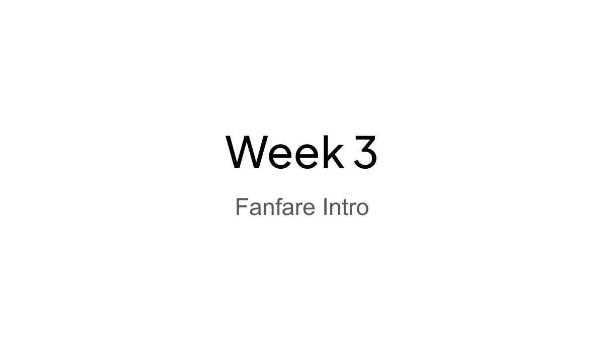
1쪽 · 3주차 Fanfare 도입
Fanfare 도입
Week는 '주'라는 뜻이다. Week 3은 '3주차'를 가리키고, Intro는 Introduction을 줄인 말로 '도입·소개'라는 뜻이다.
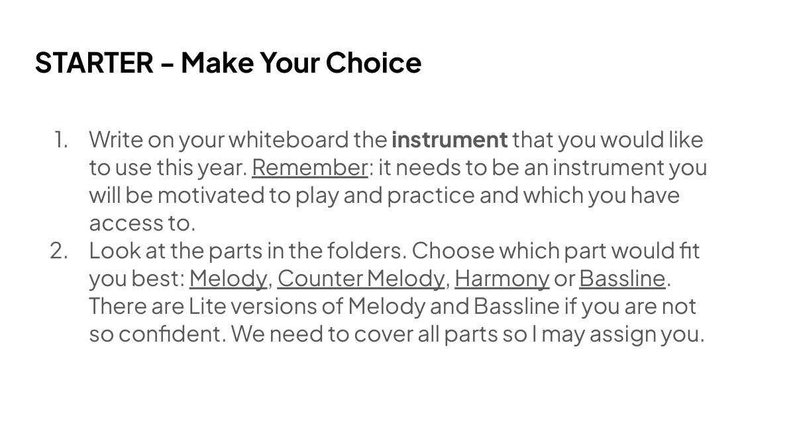
2쪽 · 수업 시작 - 악기와 파트 고르기
1. 올해 쓰고 싶은 악기를 화이트보드에 적는다.
기억할 것: 연주하고 연습할 의욕이 생기고, 직접 쓸 수 있는 악기여야 한다.
2. 폴더에 있는 파트 악보를 살펴본다.
자기에게 가장 잘 맞는 파트를 고른다: 멜로디, 카운터 멜로디, 화음, 베이스라인.
자신이 없으면 멜로디와 베이스라인의 쉬운 버전(Lite)도 있다.
모든 파트를 다 채워야 하므로 선생님이 파트를 정해 줄 수도 있다.
악기는 하고 싶은 것보다 꾸준히 연습할 마음이 들고 직접 쓸 수 있는 것으로 골라야 한다.
파트는 멜로디, 카운터 멜로디, 화음, 베이스라인 네 가지이고, 멜로디와 베이스라인에는 쉬운 Lite 버전이 있다.
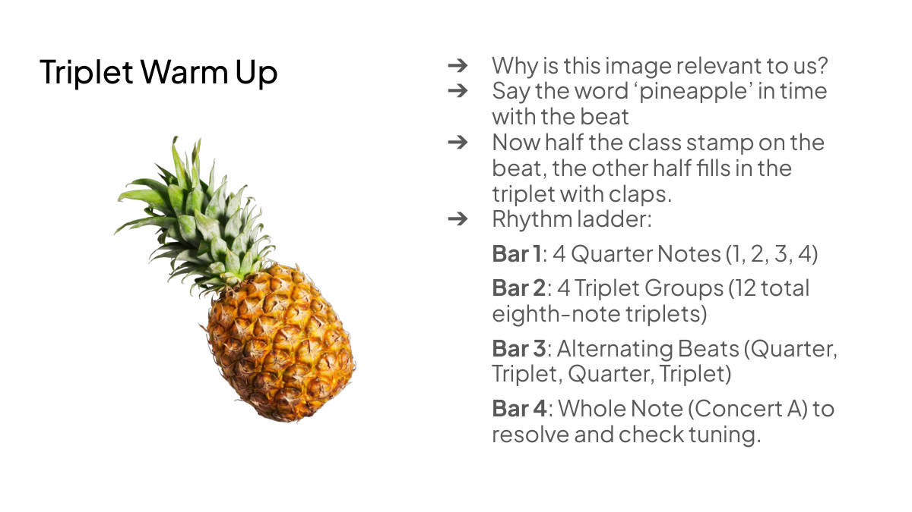
3쪽 · 셋잇단음표 준비 운동
이 그림이 우리와 무슨 관계가 있을까?
박자에 맞춰 'pineapple(파인애플)'이라는 낱말을 말해 본다.
이제 반 학생의 절반은 박에 맞춰 발을 구르고, 나머지 절반은 손뼉으로 셋잇단음표를 채운다.
리듬 사다리:
1마디: 4분음표 4개 (1, 2, 3, 4)
2마디: 셋잇단음표 묶음 4개 (8분음표 셋잇단음표 모두 12개)
3마디: 번갈아 치는 박 (4분음표, 셋잇단음표, 4분음표, 셋잇단음표)
4마디: 온음표 (콘서트 A음)로 마무리하고 음정을 확인한다.
셋잇단음표는 한 박을 똑같이 셋으로 나눈 리듬이다. 'pine-ap-ple'처럼 세 음절로 된 낱말을 박에 맞춰 말하면 한 박에 세 소리가 들어가는 느낌을 익힐 수 있다.
리듬 사다리는 4분음표(한 박에 한 소리)로 시작해 셋잇단음표(한 박에 세 소리), 둘을 번갈아 치는 마디를 지나 온음표(콘서트 A)로 끝난다. 마지막 온음표로 마무리하면서 음정이 맞는지 확인한다.
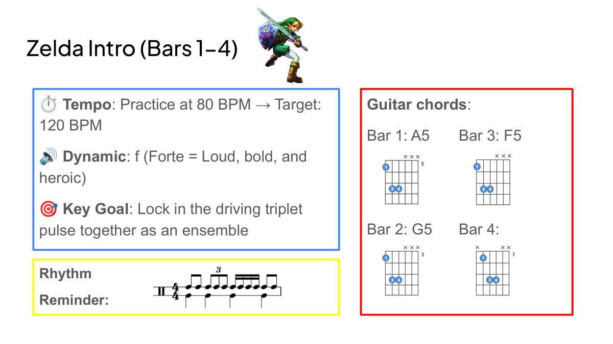
4쪽 · 젤다 인트로 (1~4마디)
⏱ 템포: 80 BPM으로 연습한다 → 목표: 120 BPM
🔊 셈여림: f (포르테 = 크고, 힘차고, 영웅적으로)
🎯 핵심 목표: 합주로 다 같이 몰아치는 셋잇단음표 박을 단단히 맞춘다
기타 코드:
1마디: A5
2마디: G5
3마디: F5
4마디:
리듬 메모:
처음에는 80 BPM으로 느리게 연습하고, 익숙해지면 목표 빠르기인 120 BPM까지 올린다.
f(포르테)는 '세게'라는 뜻이다. 이 인트로는 크고 힘차게, 영웅적인 느낌으로 연주한다.
이 부분의 핵심은 셋잇단음표 박을 합주하는 사람 모두가 똑같이 맞추는 것이다.
기타는 1마디 A5, 2마디 G5, 3마디 F5 순서로 코드를 친다.
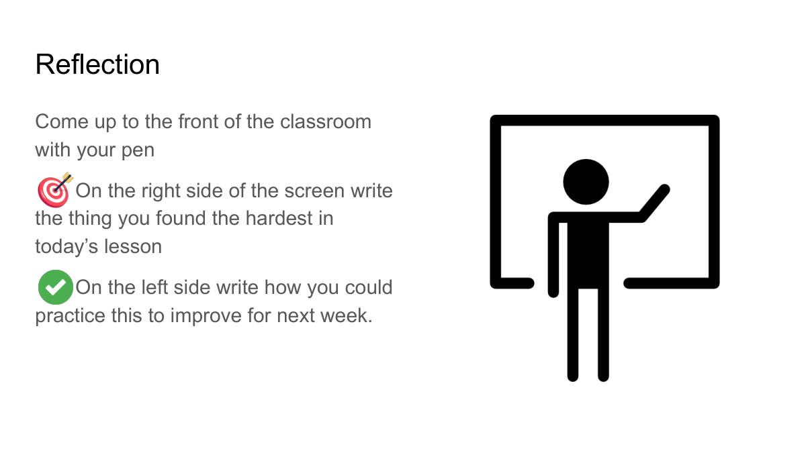
5쪽 · 오늘 수업 되돌아보기
펜을 가지고 교실 앞으로 나온다.
화면 오른쪽에는 오늘 수업에서 가장 어려웠던 것을 적는다.
화면 왼쪽에는 다음 주에 더 나아지려면 이것을 어떻게 연습할 수 있을지 적는다.
Reflection은 '되돌아보기'라는 뜻이다. 화면 오른쪽에는 오늘 수업에서 가장 어려웠던 것을, 왼쪽에는 다음 주까지 나아지기 위한 연습 방법을 적는다.
the thing you found the hardest는 '네가 가장 어렵다고 느낀 것'이라는 뜻이다. find는 여기서 '찾다'가 아니라 '~라고 느끼다'로 쓰였고, hardest는 hard의 최상급이다.
합주의 균형(ensemble balance)
여러 악기가 함께 연주할 때 각 파트가 따로 노는 것이 아니라 하나로 잘 맞아 들리는 상태를 균형 잡힌 합주(balanced ensemble performance)라고 한다.
이 수업의 곡은 젤다(Zelda) 악보이고, 파트는 멜로디(melody), 타악기(percussion), 대선율(counter melody), 화성(harmony), 베이스(bass)로 나뉜다.
대선율은 주 멜로디와 함께 흐르는 또 다른 선율이고, 화성은 화음으로 받쳐 주는 파트, 베이스는 가장 낮은 소리로 바닥을 깔아 주는 파트다.
곡의 구조(structure)
곡은 팡파르(Fanfare) 또는 인트로(Intro) → A → B → C 순서로 진행된다.
구간과 구간이 바뀌는 부분을 전환부(transition)라고 하고, 자료에서는 이것을 이음새라는 뜻의 seams라고도 부른다.
전환부에서 빨라지는 것을 rushing, 느려지는 것을 dragging이라고 한다. 둘 다 피하고 템포(tempo)를 일정하게 유지해야 한다.
박과 리듬(pulse, rhythm)
합주 전체가 함께 느끼는 일정한 박을 합주의 박(ensemble pulse)이라고 한다. 처음부터 끝까지 이 박을 놓치지 않는 것이 기본이다.
여러 파트의 리듬이 톱니바퀴처럼 서로 맞물리는 것을 리듬의 맞물림(rhythmic interlocking)이라고 한다.
연습은 80 BPM으로 천천히 시작하고, 목표 빠르기는 120 BPM이다. BPM(beats per minute)은 1분에 몇 박인지를 나타내는 숫자다.
셈여림(dynamics)
B 구간은 mf(메조 포르테, 조금 세게)로 각 파트가 균형 있게 연주한다.
C 구간은 p(피아노, 여리게)로 모두 함께 조용해진다. B에서 C로 넘어갈 때 다 같이 소리를 줄이는 것을 함께하는 셈여림 변화(joint dynamic shift)라고 한다.
여기서 '피아노(piano)'는 악기 이름이 아니라 '여리게'라는 뜻의 셈여림 기호다.
층(layer)과 소리 크기 조절
합주는 여러 소리의 층(layers)이 겹쳐서 만들어진다. 앞에 나와야 하는 소리와 뒤에서 받쳐 주는 반주(accompaniment) 소리가 있다.
B 구간에서는 부선율(sub-melody)이 또렷하게 들려야 한다. 그래서 배경 파트들은 소리를 조금 줄여 부선율이 뚫고 나오게(cut through, project) 해 준다.
내 소리만 크게 내는 것이 아니라 다른 파트가 들리도록 음량(volume)을 조절하는 것이 균형의 핵심이다.
소리가 겹쳐 이루는 짜임을 텍스처(texture)라고 하고, 층 사이의 균형 문제를 텍스처의 균형(textural balance) 문제라고 한다.
기타·우쿨렐레 코드(chords)
기타와 우쿨렐레는 한 마디(bar)에 코드 하나씩 친다.
1마디 A, 2마디 G, 3마디 F, 4마디 E 순서다.
합주 평가(evaluation)
합주 녹음(take)을 듣고 어느 구간에서 어떤 파트가 너무 크거나 작았는지, 박이 어디서 어긋났는지 찾아내는 것이 평가(evaluate)다.
평가할 때는 'B(또는 C) 구간에서 내 파트는 ~했다'처럼 구간을 콕 집어 근거(evidence)를 대고, 다음 시간에 고칠 점(next step)을 정한다.
✍️ 꼭 알아야 하는 것
- 곡 구조는 Fanfare(Intro) → A → B → C이고, B는 mf(조금 세게), C는 p(여리게)로 다 같이 소리를 줄인다
- 균형(balance)은 배경 파트가 음량을 줄여 B 구간의 부선율(sub-melody)이 또렷이 들리게 하는 것이다
- 전환부(transition)에서 빨라지거나(rushing) 느려지지(dragging) 않고 합주의 박(ensemble pulse)을 지킨다
📚 이 자료의 핵심 단어
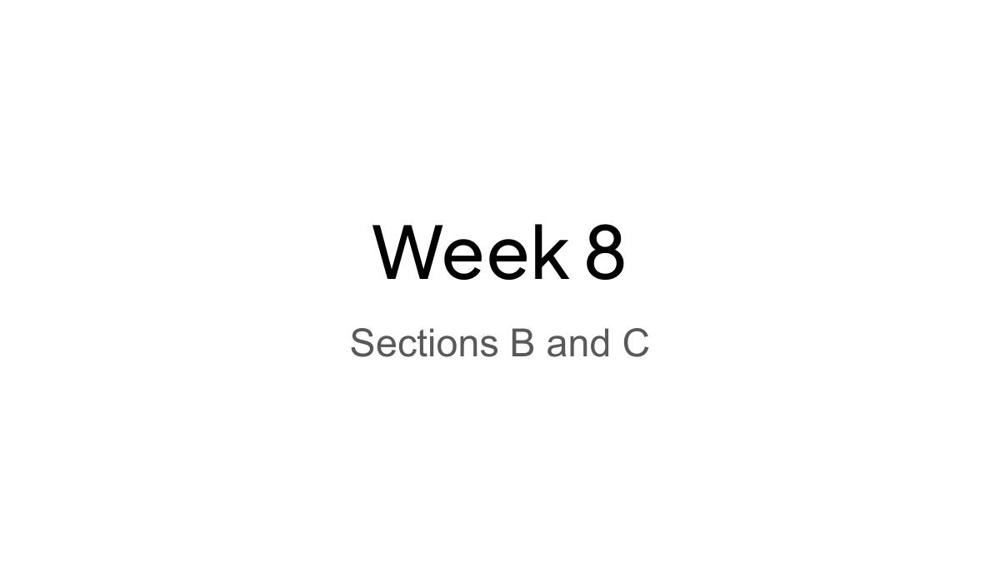
1쪽 · 8주차 B·C 부분 시작
B 부분과 C 부분
이 쪽은 8주차에 B 부분과 C 부분을 공부한다고 알려 주는 표지다.
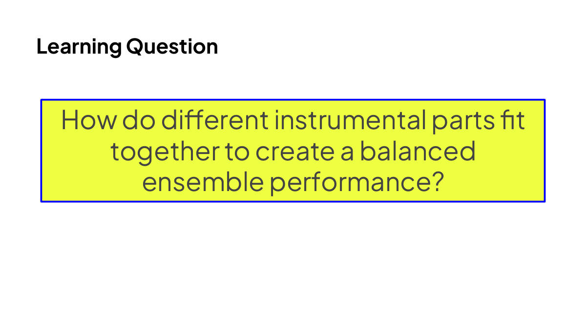
2쪽 · 배움 질문: 균형 잡힌 합주
서로 다른 악기 파트들은 어떻게 어우러져 균형 잡힌 합주 연주를 만들어 낼까?
이 단원은 여러 악기 파트가 서로 어우러져 균형 잡힌 합주를 만드는 방법을 탐구한다.
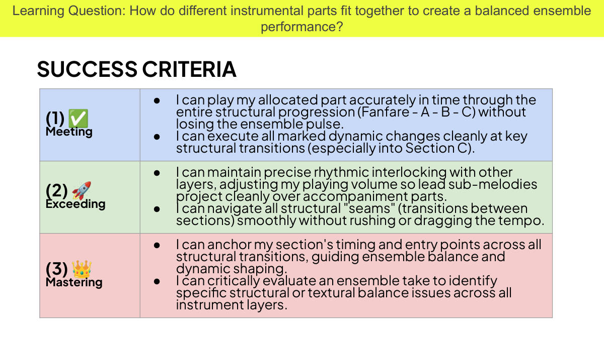
3쪽 · 성공 기준과 학습 질문
(1) 충족
나는 전체 구조 진행(팡파르 - A - B - C) 내내 합주의 박을 놓치지 않고, 내가 맡은 파트를 박자에 맞춰 정확하게 연주할 수 있다.
나는 중요한 구조 전환 부분(특히 C 부분으로 들어갈 때)에서 표시된 모든 셈여림 변화를 깔끔하게 해낼 수 있다.
(2) 뛰어넘음
나는 다른 층의 파트들과 리듬을 정확하게 맞물리게 유지하고, 주요 보조 선율이 반주 파트 위로 또렷하게 들리도록 내 연주 음량을 조절할 수 있다.
나는 모든 구조의 이음매(부분과 부분 사이의 전환)를 서두르거나 늘어지지 않고 매끄럽게 넘어갈 수 있다.
(3) 숙달
나는 모든 구조 전환에서 내 파트의 박자와 들어가는 지점을 단단히 잡아 주고, 합주의 균형과 셈여림 표현을 이끌 수 있다.
나는 합주 녹음을 비판적으로 평가하여, 모든 악기 층에 걸친 구체적인 구조 문제나 짜임새의 균형 문제를 찾아낼 수 있다.
학습 질문: 서로 다른 악기 파트들은 어떻게 어우러져 균형 잡힌 합주를 만들어 내는가?
성공 기준은 충족 - 뛰어넘음 - 숙달 세 단계로 나뉜다. 충족은 내 파트를 박자에 맞춰 정확히 연주하는 것이고, 뛰어넘음은 다른 파트와 리듬·음량을 맞추는 것이며, 숙달은 합주 전체를 이끌고 평가하는 것이다.
곡은 팡파르 - A - B - C 순서로 진행되고, 부분이 바뀌는 전환(이음매), 특히 C 부분으로 들어갈 때 셈여림 변화와 템포 유지가 중요하다.
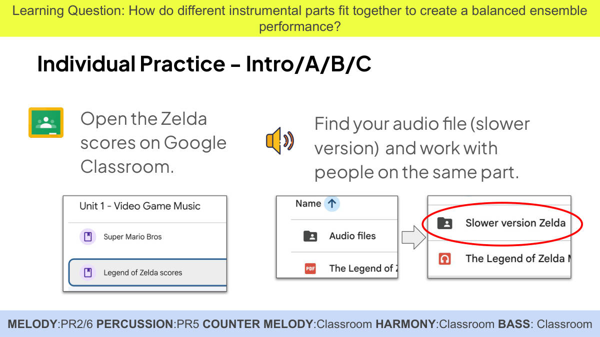
4쪽 · 개인 연습 - 도입부/A/B/C
Google Classroom에서 젤다 악보를 연다.
자기 음원 파일(느린 버전)을 찾아 같은 파트를 맡은 사람들과 함께 연습한다.
멜로디: PR2/6, 타악기: PR5, 카운터 멜로디: 교실, 화음: 교실, 베이스: 교실
학습 질문: 서로 다른 악기 파트들은 어떻게 어우러져 균형 잡힌 합주를 만들어 내는가?
곡은 도입부(Intro)와 A, B, C 부분으로 나뉘어 있고, 학생은 Google Classroom에 올라온 젤다 악보와 자기 파트의 느린 버전 음원으로 연습한다.
파트는 멜로디, 타악기, 카운터 멜로디, 화음, 베이스 다섯 가지이다. 같은 파트끼리 모여 연습하며, 멜로디는 PR2/6, 타악기는 PR5, 나머지 파트는 교실에서 연습한다.
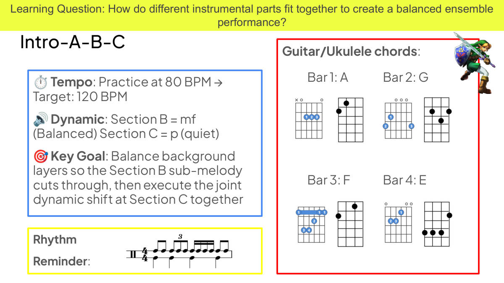
5쪽 · 합주 연습 계획과 기타·우쿨렐레 코드
⏱ 빠르기(템포): 80 BPM으로 연습한다 → 목표: 120 BPM
🔊 셈여림: B 부분 = mf(균형 있게), C 부분 = p(조용히)
🎯 핵심 목표: 배경 악기들의 균형을 맞춰 B 부분의 보조 선율이 잘 들리게 하고, C 부분에서 다 함께 셈여림을 바꾼다.
기타/우쿨렐레 코드: 1마디 A, 2마디 G, 3마디 F, 4마디 E
리듬 기억할 점:
학습 질문: 서로 다른 악기 파트들이 어떻게 어울려 균형 잡힌 합주를 만드는가?
곡은 인트로-A-B-C 순서로 진행되고, 80 BPM으로 연습을 시작해 120 BPM까지 빠르기를 올리는 것이 목표다.
B 부분은 mf(조금 세게)로 반주를 맞춰 보조 선율이 들리게 하고, C 부분에서는 모두 함께 p(여리게)로 바꾼다. 기타·우쿨렐레는 A-G-F-E 코드를 한 마디씩 친다.
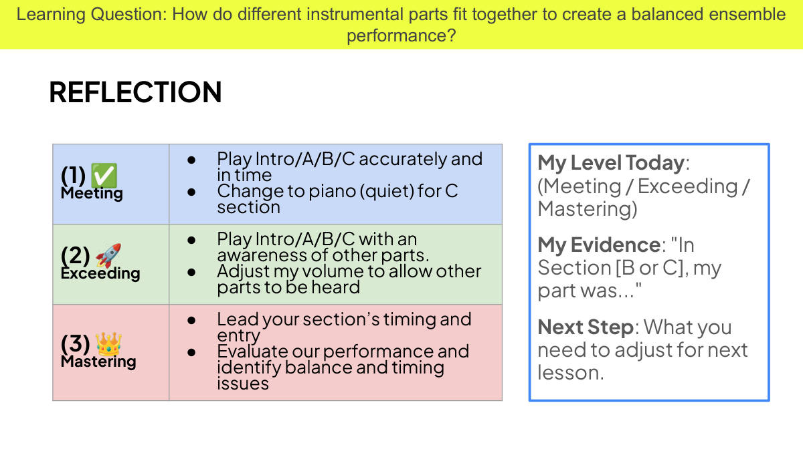
6쪽 · 되돌아보기: 오늘 나의 합주 수준
(1) 도달(Meeting)
Intro/A/B/C를 정확하게, 박자에 맞춰 연주한다.
C 부분에서는 피아노(piano, 여리게)로 바꿔 연주한다.
(2) 뛰어넘음(Exceeding)
다른 파트를 의식하면서 Intro/A/B/C를 연주한다.
다른 파트가 들릴 수 있도록 내 음량을 조절한다.
(3) 숙달(Mastering)
내 파트의 박자와 들어가는 시점을 이끈다.
우리 연주를 평가하고 균형과 박자 문제를 찾아낸다.
오늘 나의 수준: (도달 / 뛰어넘음 / 숙달)
나의 근거: "[B 또는 C] 부분에서 내 파트는 ...였다."
다음 단계: 다음 수업에서 고쳐야 할 점을 쓴다.
학습 질문: 여러 악기 파트가 어떻게 서로 어울려 균형 잡힌 합주를 만드는가?
이 쪽은 오늘 합주를 스스로 평가하는 쪽이다. 수준은 Meeting(정확하게·박자 맞춰 연주), Exceeding(다른 파트를 의식하고 음량 조절), Mastering(파트를 이끌고 연주를 평가) 세 단계로 나뉜다.
piano는 악기 이름이 아니라 '여리게' 연주하라는 셈여림 기호이다. C 부분에서는 소리를 줄여 연주해야 한다.
자기 평가를 쓸 때는 오늘 수준을 고르고, B나 C 부분에서 내 파트가 어땠는지 근거를 적은 뒤, 다음 수업에서 고칠 점을 쓴다.
핵심 질문
이번 내용의 중심 질문은 하나다.
B 섹션(Section B)에 새로 나오는 대선율(counter-melody)과 C 섹션(Section C)의 셈여림 변화(dynamic shift)가 곡의 주제 선율(main theme)과 어떻게 대비(contrast)를 만드는가이다.
같은 곡이라도 새로운 선율이 끼어들거나 소리 크기가 바뀌면 듣는 사람은 분위기가 달라졌다고 느낀다.
이것이 대비다.
곡의 구조와 연습 범위
곡은 여러 섹션으로 나뉘는데, 이번에 다루는 곳은 13마디부터 25마디(Bars 13–25)까지의 B 섹션과 C 섹션이다.
섹션이 바뀌는 지점을 구조적 전환(structural transition)이라고 한다.
전환 지점에서 박이 흔들리기 쉬우므로, 섹션이 바뀌어도 일정한 박(steady pulse)을 유지하는 것이 중요하다.
합주의 층(layers)
이 합주는 여러 악기 층(instrumental layers)으로 이루어진다.
멜로디(Melody)는 가장 중심이 되는 선율이다.
대선율(Counter Melody)은 멜로디와 함께 움직이는 또 하나의 선율로, B 섹션에서 새롭게 등장해 곡에 변화를 준다.
화음(Harmony)은 선율 아래에서 화음을 채운다.
베이스(Bass)는 가장 낮은 소리로 바닥을 받친다.
타악기(Percussion)는 리듬을 담당한다.
여러 층이 동시에 겹쳐 있는 소리의 짜임을 텍스처(texture)라고 하며, 층이 바뀌면 텍스처가 달라지고 대비가 생긴다.
밸런스 확인 – A 장조 화음
준비 연습에서는 A 장조 화음(A Major chord)을 길게 유지하며(sustained) 각 층의 소리를 따로 들어 본다.
A 장조 화음은 A, C#, E 세 음으로 이루어진다.
베이스·피아노·타악기는 낮은 A(Low A), 화음 파트는 C#, 대선율 파트는 E, 멜로디 파트는 높은 A(High A)를 맡는다.
이렇게 하면 각 파트가 화음의 어느 음을 담당하는지 알 수 있고, 어느 층이 너무 크거나 작은지 귀로 확인할 수 있다.
소리 크기를 서로 맞추는 것을 밸런스(balance)라고 한다.
B 섹션 – mf와 대선율
B 섹션의 셈여림은 mf(메조 포르테, mezzo forte)로, ‘조금 세게’라는 뜻이며 균형 잡힌 크기다.
B 섹션의 핵심은 배경이 되는 층들(background layers)이 소리를 조절해서 새로 나오는 부선율(sub-melody), 즉 대선율이 뚜렷하게 들리도록(cut through) 만드는 것이다.
내 파트가 주인공이 아닐 때는 주선율 층(lead layer)보다 작게 연주해 밸런스를 맞춰야 한다.
C 섹션 – p로 바뀌는 셈여림
C 섹션의 셈여림은 p(피아노, piano)로 ‘여리게’, 즉 조용히 연주하라는 뜻이다.
여기서 piano는 악기 이름이 아니라 셈여림 기호다.
B 섹션의 mf에서 C 섹션의 p로 넘어갈 때 모든 파트가 함께(together) 소리를 줄여야 효과가 난다.
이렇게 전체가 한꺼번에 셈여림을 바꾸는 것을 공동 셈여림 변화(collective dynamic shift)라고 하며, 이 변화가 곡의 에너지(energy)를 바꾸어 앞부분과 대비를 만든다.
C 섹션에서는 소리만 줄이는 데서 그치지 않고 표현력 있게(expressively) 프레이즈를 만들어 연주하는 것이 좋다.
템포
연습은 80 BPM에서 시작하고, 목표 템포(tempo)는 120 BPM이다.
BPM(beats per minute)은 1분에 박이 몇 번 들어가는지를 나타내므로 숫자가 클수록 빠르다.
느린 속도에서 정확하게 익힌 뒤 점점 속도를 올린다.
기타·우쿨렐레 코드
기타와 우쿨렐레는 마디마다 코드가 바뀐다.
1마디 A → 2마디 G → 3마디 F → 4마디 E 순서다.
코드 이름 글자가 A에서 E로 한 단계씩 내려가는 흐름이다.
되돌아보기 문장
자기 연주를 영어로 설명할 때는 이런 틀을 쓴다.
“In Section [B or C], my part was…”(B 또는 C 섹션에서 내 파트는 …했다).
예를 들어 C 섹션에서 p로 제때 바꿨는지, B 섹션에서 대선율이 잘 들리도록 소리를 조절했는지를 근거(evidence)로 적는다.
✍️ 꼭 알아야 하는 것
- B 섹션은 새로운 대선율(counter-melody)이 등장하고 mf로 연주하며, 배경 층은 대선율이 잘 들리도록 밸런스(balance)를 맞춘다.
- C 섹션은 p(piano, 여리게)로 모두 함께 소리를 줄이는 셈여림 변화(dynamic shift)로 주제와 대비(contrast)를 만든다.
- A 장조 화음(A Major chord)은 A·C#·E로 이루어지며, 층(layers)과 텍스처(texture)가 바뀌면 곡의 에너지(energy)가 달라진다.
📚 이 자료의 핵심 단어
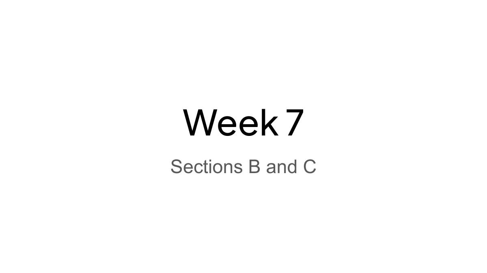
1쪽 · 7주차: B·C 부분
B 부분과 C 부분
이 쪽은 7주차에 B 부분과 C 부분을 공부한다는 것을 알려 주는 표지다.
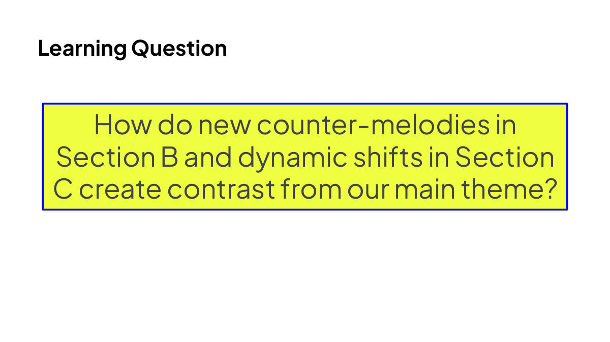
2쪽 · 학습 질문: 대조 만들기
B 부분의 새로운 대선율과 C 부분의 셈여림 변화는 어떻게 우리의 주제와 대조를 만들어 낼까?
이 단원의 학습 질문은 B 부분의 새로운 대선율(counter-melody)과 C 부분의 셈여림 변화(dynamic shifts)가 주제(main theme)와 어떻게 대조(contrast)를 이루는지 알아보는 것이다.
대선율은 주선율과 함께 연주되는 또 다른 선율이고, 셈여림은 소리의 세기를 뜻한다.
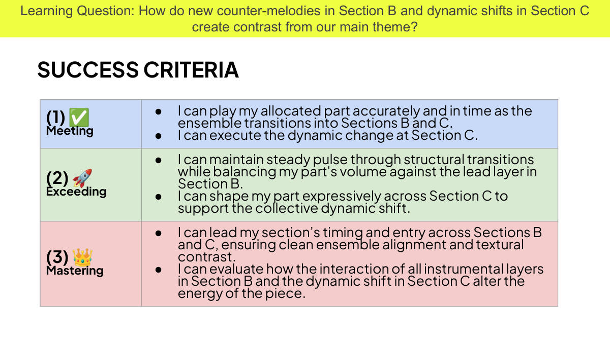
3쪽 · 성공 기준과 배움 질문
(1) 충족
합주가 섹션 B와 섹션 C로 넘어갈 때, 나는 내가 맡은 파트를 정확하게, 박자에 맞춰 연주할 수 있다.
나는 섹션 C에서 셈여림 변화를 해낼 수 있다.
(2) 뛰어넘기
나는 곡의 구조가 바뀌는 곳에서도 일정한 박을 지킬 수 있고, 섹션 B에서 내 파트의 소리 크기를 주된 층(리드 레이어)과 맞춰 균형을 잡을 수 있다.
나는 섹션 C 내내 내 파트를 표현력 있게 다듬어, 다 함께 셈여림을 바꾸는 것을 도울 수 있다.
(3) 완전 정복
나는 섹션 B와 C에서 우리 파트의 박자와 들어가는 때를 이끌어, 합주가 깔끔하게 맞고 짜임새의 대비가 드러나게 할 수 있다.
나는 섹션 B에서 모든 악기 층이 어우러지는 방식과 섹션 C의 셈여림 변화가 곡의 에너지를 어떻게 바꾸는지 평가할 수 있다.
배움 질문: 섹션 B의 새로운 대선율과 섹션 C의 셈여림 변화는 어떻게 우리의 주제 선율과 대비를 만들어 낼까?
성공 기준은 충족, 뛰어넘기, 완전 정복의 세 단계다. 단계가 올라갈수록 내 파트를 정확히 연주하는 것에서 소리의 균형과 표현을 다듬는 것, 그리고 파트를 이끌고 곡 전체를 평가하는 것으로 나아간다.
섹션 B에서는 새로운 대선율(주제 선율과 함께 울리는 또 다른 선율)이 더해지고, 섹션 C에서는 셈여림이 바뀐다. 이 두 가지가 주제 선율과 대비를 만든다는 것이 이 쪽의 배움 질문이다.
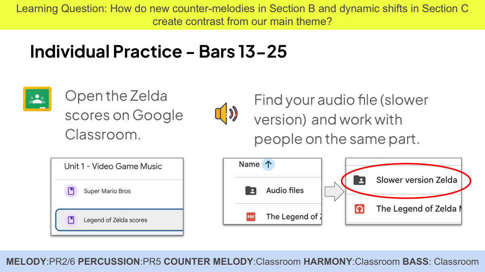
4쪽 · 개인 연습 - 13~25마디
Google Classroom에서 Zelda 악보를 연다.
자기 오디오 파일(느린 버전)을 찾고, 같은 파트를 맡은 사람들과 함께 연습한다.
멜로디: PR2/6 · 타악기: PR5 · 카운터 멜로디: 교실 · 화음: 교실 · 베이스: 교실
학습 질문: B 부분의 새 카운터 멜로디와 C 부분의 셈여림 변화는 어떻게 주제 선율과 대비를 만드는가?
이 쪽은 13~25마디를 혼자 연습하는 시간이다. Google Classroom에서 Zelda 악보와 느린 버전 오디오 파일을 찾아 같은 파트끼리 연습한다. 파트마다 연습 장소가 다르다. 멜로디는 PR2/6, 타악기는 PR5에서 하고, 카운터 멜로디·화음·베이스는 교실에서 한다.
학습 질문의 핵심은 대비다. B 부분에서는 새 카운터 멜로디가 나오고, C 부분에서는 셈여림(소리의 세기)이 바뀐다. 두 가지가 주제 선율과 어떻게 다르게 들리는지 생각하며 연습한다.
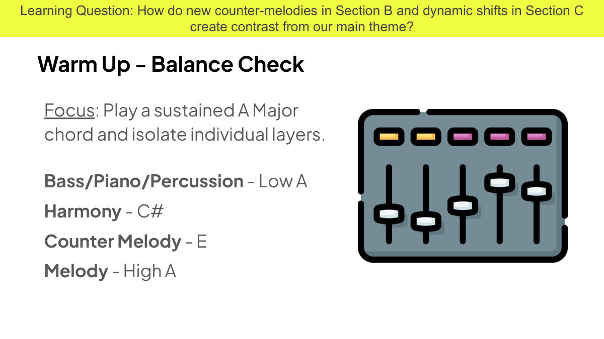
5쪽 · 준비 운동 - 소리 균형 확인
베이스/피아노/타악기 - 낮은 A
화음 - C#
대선율 - E
주선율 - 높은 A
중점: A장조 화음을 길게 유지하며 연주하고, 각 층을 하나씩 따로 떼어 들어 본다.
학습 질문: B 부분의 새로운 대선율과 C 부분의 셈여림 변화는 어떻게 주제와 대비를 만드는가?
A장조 화음은 A·C#·E 세 음으로 이루어진다. 낮은 A는 베이스·피아노·타악기, C#은 화음, E는 대선율, 높은 A는 주선율이 맡아 각 층이 한 음씩 나누어 연주한다.
대선율은 주선율과 함께 연주되는 또 다른 선율이고, 셈여림은 소리의 세기(크고 작음)를 말한다. 이번 시간에는 B 부분의 대선율과 C 부분의 셈여림 변화가 주제와 어떻게 대비를 이루는지 살펴본다.
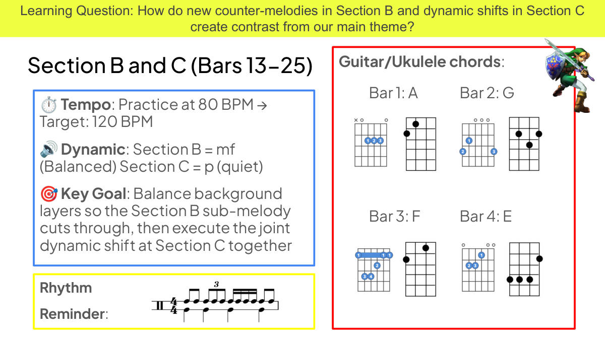
6쪽 · 섹션 B와 C 연습 (13~25마디)
⏱ 빠르기: 80 BPM으로 연습한다 → 목표: 120 BPM
🔊 셈여림: 섹션 B = mf (균형 있게), 섹션 C = p (여리게)
🎯 핵심 목표: 배경 파트들의 균형을 맞춰 섹션 B의 부선율이 또렷하게 들리게 하고, 섹션 C에서는 다 함께 셈여림 변화를 맞춰 연주한다.
기타/우쿨렐레 코드: 1마디 A, 2마디 G, 3마디 F, 4마디 E
리듬 기억할 점:
학습 질문: 섹션 B의 새로운 대선율과 섹션 C의 셈여림 변화는 어떻게 주제 선율과 대비를 만들어 내는가?
섹션 B는 mf로 연주하되 배경 파트는 부선율이 잘 들리도록 소리를 조절하고, 섹션 C에서는 모두 함께 p로 바꿔 여리게 연주한다.
빠르기는 80 BPM에서 시작해 120 BPM까지 올리는 것이 목표이고, 기타·우쿨렐레 코드는 A, G, F, E 순서로 바뀐다.
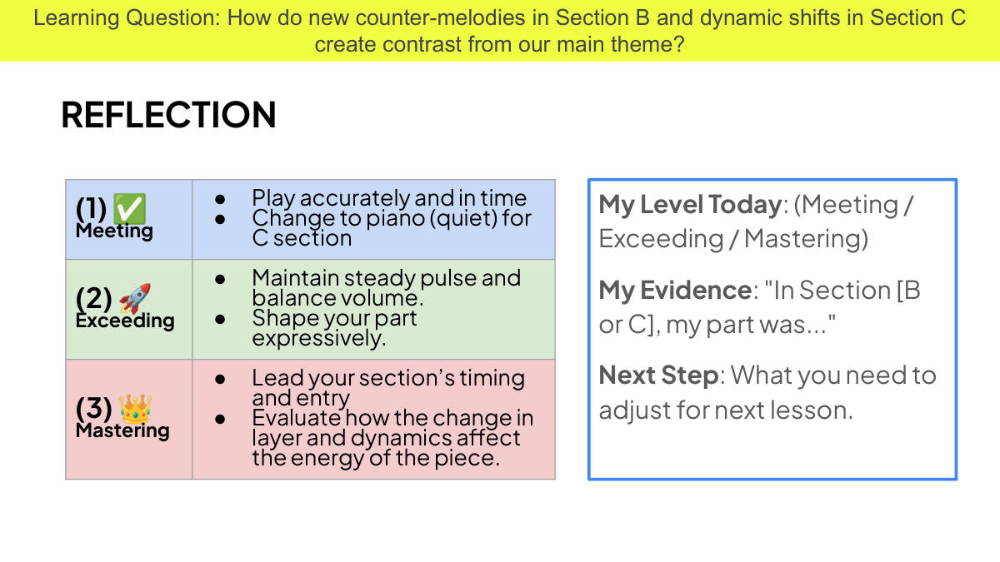
7쪽 · 수업 돌아보기와 오늘의 내 수준
(1) 도달(Meeting)
정확하게, 박자에 맞춰 연주한다.
C 부분에서는 피아노(작게)로 바꾼다.
(2) 뛰어넘기(Exceeding)
일정한 박(pulse)을 유지하고 소리 크기의 균형을 맞춘다.
자기 파트를 표현력 있게 다듬는다.
(3) 완전히 익히기(Mastering)
자기 파트(섹션)의 박자와 들어가는 때를 이끈다.
층(layer)과 셈여림(dynamics)의 변화가 곡의 에너지에 어떤 영향을 주는지 평가한다.
학습 질문: B 부분의 새로운 대선율(counter-melody)과 C 부분의 셈여림 변화는 어떻게 주제와 대비를 만드는가?
오늘 나의 수준: (도달 / 뛰어넘기 / 완전히 익히기)
나의 근거: "[B 또는 C] 부분에서 나의 파트는 …였다."
다음 단계: 다음 수업을 위해 고쳐야 할 점이다.
돌아보기는 세 단계로 나뉜다. 도달은 정확한 박자와 C 부분의 피아노(작게)이고, 뛰어넘기는 일정한 박과 소리 균형, 표현이며, 완전히 익히기는 파트의 박자·들어가는 때를 이끌고 층과 셈여림이 곡의 에너지에 주는 영향을 평가하는 것이다.
학습 질문의 핵심은 B 부분의 대선율과 C 부분의 셈여림 변화가 주제와 대비를 만든다는 점이다. 돌아보기에는 오늘 나의 수준, B나 C 부분에서 내 파트가 어땠는지에 대한 근거, 다음 수업에서 고칠 점을 적는다.
핵심 질문
이번 단원의 질문은 '셈여림의 대비(dynamic contrast)와 화음의 흐름(harmonic flow)이 어떻게 음악 테마에 이야기 같은 긴장감(narrative tension)을 주는가'이다.
음악도 이야기처럼 올라가고 내려가며 긴장을 쌓았다가 푼다. 소리가 커졌다 작아지는 변화와 화음이 바뀌어 가는 흐름이 그 긴장을 만든다.
곡과 구간
연습하는 곡은 젤다 테마(Zelda Theme)이고, 범위는 5~12마디(Bars 5–12), 모두 8마디다.
이 부분이 Section A의 메인 테마(main theme)다. 곡은 팡파르(Fanfare)로 시작하고, 그다음 Section A로 넘어간다. 넘어갈 때 합주 박자가 흔들리지 않게 이어 가는 것이 중요하다.
화음 진행(chord progression)
기타·우쿨렐레(Guitar/Ukulele)가 치는 기본 화음은 A – G – F – E다.
1마디 A, 2마디 G, 3마디 F, 4마디 E로 한 마디에 화음 하나씩 바뀐다. 근음이 A에서 E까지 한 칸씩 내려가는 흐름이다.
화음은 리듬 파트(rhythm section)와 박자를 맞춰서 정확한 때에 바꿔야 한다. 화음이 매끄럽게 넘어가는 것을 smooth chord transitions라고 한다.
빠르기(tempo)
처음에는 80 BPM으로 연습하고, 목표 빠르기는 120 BPM이다.
BPM(beats per minute)은 1분에 박이 몇 번 들어가는지를 나타낸다. 숫자가 클수록 빠르다.
셈여림(dynamics)
이 구간의 셈여림은 mf(mezzo forte)로, '조금 세게'라는 뜻이다. 자료에서는 '적당히 크고, 노래하듯(melodic), 표현이 풍부하게(expressive)'라고 설명한다.
Section A 메인 테마는 소리가 올라가는 곳(rises)과 내려가는 곳(falls)이 있다. 이 셈여림의 오르내림을 찾아서 분명하게 대비시키는 것이 dynamic contrast다.
합주의 목표
가장 중요한 목표는 힘차게 몰아가는 리듬 파트 위로 주선율(main melody)이 또렷하게 들리게 하면서, 모둠 전체가 박자를 맞추는 것이다.
그러려면 반주(accompaniment)가 주선율(lead melody)을 덮지 않도록 소리 크기의 균형(balance)을 맞춰야 한다. 합주 전체가 같은 박을 지키는 것을 steady ensemble pulse라고 한다.
표현을 다듬는 요소
프레이징(phrasing)은 선율을 문장처럼 묶어 숨 쉬듯 연주하는 것이다. 프레이즈의 끝(phrase endings)을 깔끔하게 마무리해야 한다.
아티큘레이션(articulation)은 음을 끊거나 이어서 연주하는 방식이다.
대선율(counter-melody)은 주선율과 함께 흐르는 또 다른 선율이다.
아티큘레이션, 대선율, 셈여림 표현을 조금씩 바꾸면 Section A의 긴장감이 더 커질 수 있다.
파트 구성
합주는 멜로디(Melody), 대선율(Counter Melody), 화음(Harmony), 베이스(Bass), 타악기(Percussion) 다섯 파트로 나뉜다.
리듬 사다리(Rhythm Ladder)
파트마다 다른 음표 길이로 박을 쪼개는 연습이다.
베이스·타악기는 4분음표(crotchets)로 한 박에 한 번 친다.
멜로디는 8분음표(quavers)로 한 박에 두 번 친다.
대선율은 셋잇단 8분음표(triplet quavers)로 한 박에 세 번 친다.
화음은 16분음표(semiquavers)로 한 박에 네 번 친다.
음은 A 장조(A Major) 화음의 구성음 A, C#, E 중에서 하나를 골라 연주한다.
✍️ 꼭 알아야 하는 것
- 젤다 테마 Section A(5~12마디)의 화음 진행은 A – G – F – E이고, 한 마디에 화음 하나씩 바뀐다.
- 셈여림의 대비(dynamic contrast)와 화음의 흐름(harmonic flow)이 테마에 이야기 같은 긴장감(narrative tension)을 만든다. 이 구간의 셈여림은 mf(조금 세게)다.
- 음표 길이: crotchet(4분음표, 한 박에 1번), quaver(8분음표, 2번), triplet quaver(셋잇단 8분음표, 3번), semiquaver(16분음표, 4번)이다.
📚 이 자료의 핵심 단어
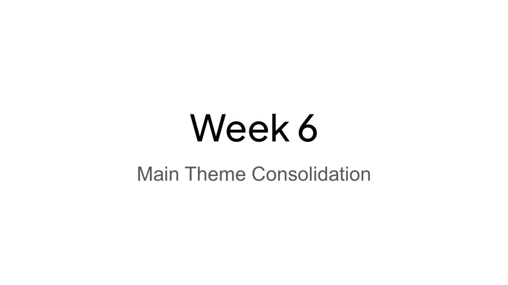
1쪽 · 6주차 주요 주제 정리
주요 주제 정리
이 쪽은 6주차 공부를 여는 표지다. 'Main Theme'은 '주요 주제', 'Consolidation'은 '배운 것을 굳게 다지는 정리'라는 뜻이다.
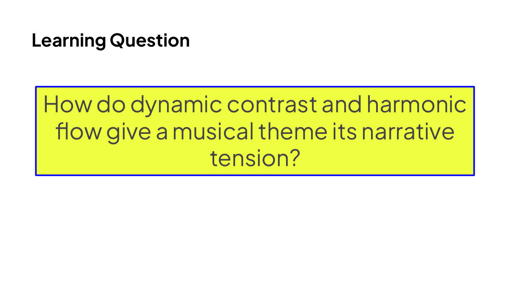
2쪽 · 학습 질문: 셈여림 대비와 화성의 흐름
셈여림 대비와 화성의 흐름은 어떻게 음악 주제에 이야기 같은 긴장감을 줄까?
이 단원은 셈여림 대비와 화성의 흐름이 음악 주제에 이야기 같은 긴장감을 어떻게 만드는지를 묻는 질문에 답하는 것이 목표다.
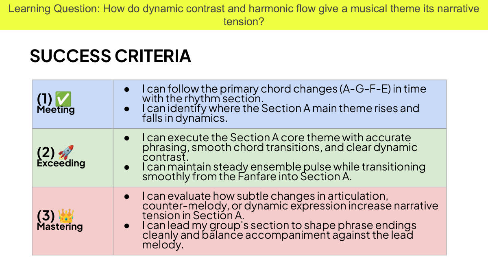
3쪽 · 성공 기준과 학습 질문
(1) 충족
나는 리듬 섹션에 맞춰 박자에 맞게 주요 화음 변화(A-G-F-E)를 따라갈 수 있다.
나는 섹션 A의 주제 선율이 셈여림에서 어디서 커지고 어디서 작아지는지 찾을 수 있다.
(2) 뛰어넘음
나는 섹션 A의 핵심 주제를 정확한 프레이징, 매끄러운 화음 전환, 뚜렷한 셈여림 대비로 연주할 수 있다.
나는 팡파르에서 섹션 A로 매끄럽게 넘어가면서 합주의 일정한 박을 지킬 수 있다.
(3) 숙달
나는 아티큘레이션, 대선율, 셈여림 표현의 작은 변화가 섹션 A의 이야기 긴장감을 어떻게 높이는지 평가할 수 있다.
나는 우리 모둠의 파트를 이끌어 프레이즈 끝을 깔끔하게 다듬고 반주와 주선율의 균형을 맞출 수 있다.
학습 질문: 셈여림 대비와 화성의 흐름은 어떻게 음악 주제에 이야기 긴장감을 주는가?
성공 기준은 충족·뛰어넘음·숙달 세 단계다. 충족은 화음 변화(A-G-F-E)를 박자에 맞춰 따라가고 섹션 A 주제의 셈여림이 커지고 작아지는 곳을 찾는 것이다. 뛰어넘음은 프레이징·화음 전환·셈여림 대비를 살려 연주하고 팡파르에서 섹션 A로 넘어갈 때 박을 지키는 것이다. 숙달은 아티큘레이션·대선율·셈여림이 긴장감을 만드는 방식을 평가하고 모둠을 이끄는 것이다.
이 쪽의 학습 질문은 셈여림 대비와 화성의 흐름이 음악 주제에 이야기 긴장감을 어떻게 주는가이다. 셈여림 대비는 소리의 크고 작음 차이이고, 화성의 흐름은 화음이 A-G-F-E처럼 이어지는 것이다.
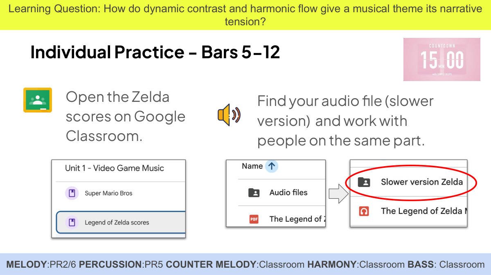
4쪽 · 개인 연습 - 5~12마디
구글 클래스룸에서 젤다 악보를 연다.
자기 오디오 파일(느린 버전)을 찾아 같은 파트를 맡은 사람들과 함께 연습한다.
학습 질문: 셈여림의 대비와 화성의 흐름은 음악 주제에 어떻게 이야기 같은 긴장감을 주는가?
멜로디: PR2/6, 타악기: PR5, 대선율: 교실, 화성: 교실, 베이스: 교실
이 쪽은 젤다 악보의 5~12마디를 파트별로 나누어 연습하는 시간이다. 멜로디·타악기·대선율·화성·베이스 다섯 파트가 정해진 장소에서 따로 연습한다.
학습 질문의 핵심은 셈여림의 대비(크고 작음의 차이)와 화성의 흐름이 음악 주제에 긴장감을 만든다는 점이다.
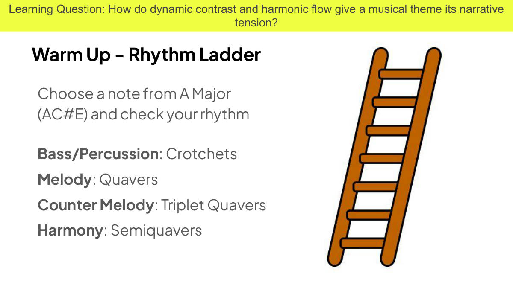
5쪽 · 준비 활동 - 리듬 사다리
베이스/타악기: 4분음표
멜로디: 8분음표
대선율: 셋잇단 8분음표
화성: 16분음표
가장조(A, C#, E)에서 음 하나를 골라 리듬을 확인한다.
학습 질문: 셈여림 대비와 화성의 흐름은 어떻게 음악 주제에 이야기 같은 긴장감을 주는가?
리듬 사다리는 파트마다 다른 음표를 맡는다. 베이스·타악기는 4분음표, 멜로디는 8분음표, 대선율은 셋잇단 8분음표, 화성은 16분음표다. 아래로 갈수록 한 박을 더 잘게 나누므로 리듬이 빨라진다.
A, C#, E는 가장조의 으뜸화음을 이루는 세 음이다. 이 중 한 음을 골라 자기 파트의 리듬을 연주해 본다.
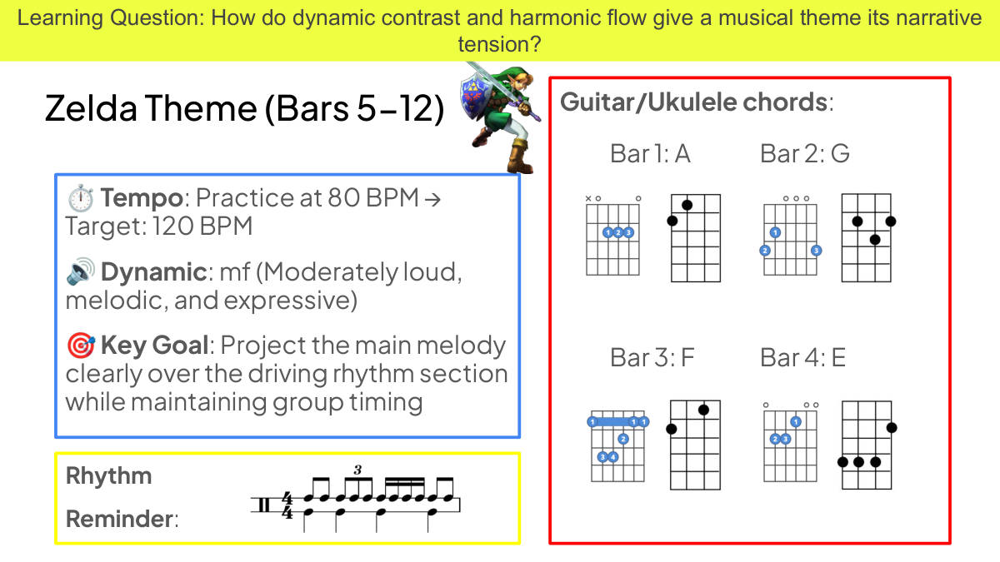
6쪽 · 젤다 테마 연주하기 (5~12마디)
⏱ 템포: 80 BPM으로 연습한다. 목표는 120 BPM이다.
🔊 셈여림: mf(메조 포르테, 조금 세게. 선율적이고 표현이 풍부하게)
🎯 핵심 목표: 몰아가는 리듬 파트 위로 주선율이 또렷하게 들리게 하면서, 모둠 전체의 박자를 맞춘다.
기타/우쿨렐레 코드:
1마디: A
2마디: G
3마디: F
4마디: E
리듬 기억할 점:
배움 질문: 셈여림의 대비와 화음의 흐름은 어떻게 음악 주제에 이야기 같은 긴장감을 주는가?
이 곡은 80 BPM으로 천천히 연습한 뒤 목표 빠르기인 120 BPM까지 올린다. 셈여림은 mf(조금 세게)로 친다.
기타·우쿨렐레 코드는 A, G, F, E 순서로 한 마디씩 내려간다. 리듬 파트가 몰아가는 동안 주선율이 묻히지 않게 또렷하게 들려야 하고, 모둠 전체가 박자를 맞춰야 한다.

7쪽 · 되돌아보기: 오늘 연습은 몇 단계?
오늘 5~12마디 리허설이 비디오 게임의 한 레벨이었다면, 어디에 세이브(저장)를 해 두었는가?
학습 질문: 셈여림 대비와 화성의 흐름은 어떻게 음악 주제에 이야기 같은 긴장감을 주는가?
🎮 레벨 1: 이 음과 화음에서 손가락을 어디에 둘지 아직 익히는 중이다.
🎮 레벨 2: 앞 절반의 음은 익혔지만, 뒤 절반에서 막혔다.
🎮 스테이지 클리어! 8마디 전체를 음을 빠뜨리지 않고 다 이어서 쳤다.
다음 수업 전에 고쳐야 할 가장 큰 '글리치'(틀린 음, 놓친 화음 바뀜)는 무엇인가?
이 쪽은 오늘 5~12마디 연습을 스스로 돌아보는 쪽이다. 게임 레벨 세 단계(레벨 1, 레벨 2, 스테이지 클리어) 가운데 내 연습이 어디까지 왔는지 고른다.
'글리치'는 틀린 음이나 놓친 화음 바뀜을 뜻한다. 다음 수업 전에 고칠 가장 큰 실수 하나를 찾아 적는다.
핵심 질문
이번 수업의 큰 질문은 '셈여림 대비(dynamic contrast)와 화음 흐름(harmonic flow)이 어떻게 음악 테마에 이야기 같은 긴장감(narrative tension)을 주는가'이다.
셈여림 대비는 소리가 커졌다 작아졌다 하는 차이다. 화음 흐름은 화음이 다음 화음으로 넘어가는 순서다.
이 두 가지가 합쳐지면 음악이 이야기처럼 고조되었다가 가라앉는 느낌을 준다.
리듬 사다리(Rhythm Ladder)
음표가 점점 잘게 쪼개지는 순서로 리듬을 연습한다.
1마디는 4분음표(crotchet) 4개로, 1·2·3·4 박마다 하나씩 친다.
2마디는 점8분음표(dotted quaver) + 16분음표(semiquaver)로, 길게-짧게 튀는 리듬이다.
3마디는 8분음표 셋잇단음표(quaver triplets)로, 한 박을 똑같이 셋으로 나눈다.
4마디는 16분음표(semiquavers)로, 한 박을 넷으로 나눈다.
네 가지 주요 화음(primary chords)
이 곡의 중심 화음은 A - G - F - E 순서로 바뀐다. 근음(root)이 한 음씩 아래로 내려가는 흐름이다.
A major = A, C#, E
G major = G, B, D
F major = F, A, C
E major = E, G#, B
워밍업에는 이 밖에도 B(B, D#, F#), F#(F#, A#, C#), D(D, F#, A), C#(C#, F, G#) 화음의 구성음이 함께 나온다.
기타·우쿨렐레는 1마디 A, 2마디 G, 3마디 F, 4마디 E로 화음을 친다.
젤다 테마 5~12마디 연주 정보
템포(tempo)는 먼저 80 BPM으로 연습하고, 목표는 120 BPM이다. BPM은 1분에 몇 박을 치는지를 나타낸다.
셈여림(dynamic)은 mf(mezzo forte)로, '조금 세게'라는 뜻이다. 선율적이고 표현력 있게 연주한다.
가장 중요한 점은 리듬 파트가 계속 밀고 나가는 동안에도 주선율(main melody)이 그 위로 또렷하게 들리게 하고, 다 같이 박자를 맞추는 것이다.
합주에서 중요한 개념
프레이징(phrasing)은 선율을 문장처럼 끊고 이어서 자연스럽게 표현하는 것이다. 프레이즈 끝(phrase ending)을 깔끔하게 마무리해야 한다.
앙상블 펄스(ensemble pulse)는 모두가 함께 느끼는 일정한 박이다. 팡파르(Fanfare)에서 Section A로 넘어갈 때도 박이 흔들리면 안 된다.
밸런스(balance)는 반주(accompaniment)가 주선율(lead melody)을 덮지 않도록 소리 크기를 맞추는 것이다.
아티큘레이션(articulation)(음을 끊거나 잇는 방식), 대선율(counter-melody)(주선율과 함께 흐르는 다른 선율), 셈여림 표현을 조금만 바꿔도 Section A의 긴장감이 커진다.
Section A의 주 테마는 셈여림이 올라갔다 내려가는(rises and falls) 부분이 있으니, 어디서 커지고 작아지는지 찾아야 한다.
✍️ 꼭 알아야 하는 것
- 화음 순서 A-G-F-E와 각 화음의 구성음(A: A C# E / G: G B D / F: F A C / E: E G# B)
- 셈여림 대비(dynamic contrast)와 화음 흐름(harmonic flow)이 음악에 긴장감(narrative tension)을 만든다는 점
- 리듬 사다리 순서: 4분음표(crotchet) → 점8분+16분음표(dotted quaver/semiquaver) → 셋잇단음표(quaver triplets) → 16분음표(semiquavers)
📚 이 자료의 핵심 단어
1쪽 · 5주차 주제 소개
주요 주제
이 쪽은 Lesson 5의 첫 쪽으로, 5주차에 배울 주요 주제를 소개하는 표지다.

2쪽 · 배움 질문: 음악 주제의 긴장감
셈여림의 대비(dynamic contrast)와 화성의 흐름(harmonic flow)은 어떻게 음악 주제에 이야기 같은 긴장감을 주는가?
이 단원은 셈여림의 대비와 화성의 흐름이 음악 주제에 이야기 같은 긴장감을 만드는 방식을 묻는 질문에서 시작한다.
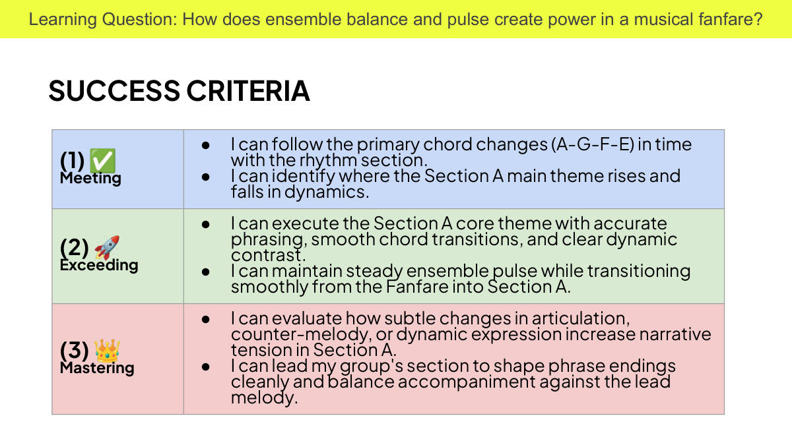
3쪽 · 성공 기준: 팡파르의 힘
학습 질문: 음악 팡파르에서 합주의 균형과 박(펄스)은 어떻게 힘을 만들어 내는가?
(1) ✅ 도달
나는 리듬 파트에 맞춰 제때 주요 화음 변화(A-G-F-E)를 따라갈 수 있다.
나는 A 부분 주제가 셈여림에서 커지고 작아지는 곳을 찾아낼 수 있다.
(2) 🚀 넘어섬
나는 정확한 프레이징, 매끄러운 화음 전환, 뚜렷한 셈여림 대비로 A 부분 핵심 주제를 연주할 수 있다.
나는 팡파르에서 A 부분으로 매끄럽게 넘어가면서 합주의 박을 일정하게 지킬 수 있다.
(3) 👑 완전히 익힘
나는 아티큘레이션, 대선율, 셈여림 표현의 작은 변화가 A 부분의 이야기 긴장감을 어떻게 높이는지 평가할 수 있다.
나는 우리 모둠의 파트를 이끌며 프레이즈 끝을 깔끔하게 다듬고, 반주와 주선율의 균형을 맞출 수 있다.
이 쪽은 팡파르 연주의 성공 기준을 도달·넘어섬·완전히 익힘 세 단계로 나눈 것이다. 도달 단계는 A-G-F-E 화음 변화를 리듬에 맞춰 따라가고 A 부분 주제의 셈여림 변화를 찾는 것이다.
높은 단계로 갈수록 프레이징·화음 전환·셈여림 대비를 정확히 연주하고, 팡파르에서 A 부분으로 넘어갈 때 박을 지키며, 반주와 주선율의 균형을 맞추는 일까지 요구한다.
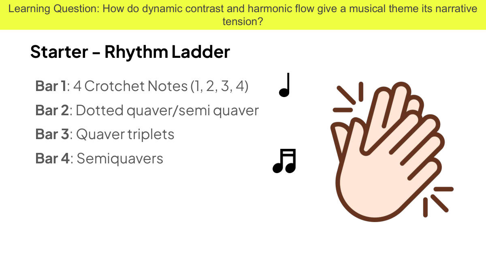
4쪽 · 도입 활동: 리듬 사다리와 학습 질문
1마디: 4분음표 4개 (1, 2, 3, 4)
2마디: 점8분음표/16분음표
3마디: 8분음표 셋잇단음표
4마디: 16분음표
학습 질문: 셈여림의 대비와 화성의 흐름은 어떻게 음악 주제에 이야기 같은 긴장감을 주는가?
리듬 사다리는 1마디의 4분음표에서 4마디의 16분음표로 갈수록 한 박을 더 잘게 나누어 연주하는 활동이다.
이번 수업의 학습 질문은 셈여림 대비와 화성의 흐름이 음악 주제의 긴장감을 어떻게 만드는지 묻는다.
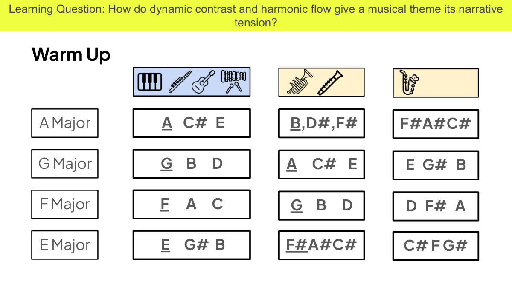
5쪽 · 워밍업: 장조 화음 익히기
A장조(A Major)
G장조(G Major)
F장조(F Major)
E장조(E Major)
학습 질문: 셈여림의 대비와 화성의 흐름은 어떻게 음악 주제에 이야기 같은 긴장감을 주는가?
이 쪽에는 A장조, G장조, F장조, E장조가 나오고, 세 음을 쌓은 화음이 함께 적혀 있다. 예를 들어 A–C#–E, G–B–D, F–A–C, E–G#–B, B–D#–F#, F#–A#–C#, D–F#–A 같은 묶음이다.
이 단원의 학습 질문은 셈여림의 대비(크고 작은 소리의 차이)와 화성의 흐름이 음악 주제에 이야기 같은 긴장감을 어떻게 만드는지 묻는 것이다.
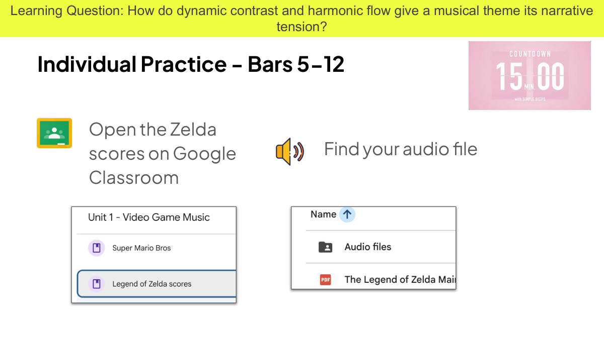
6쪽 · 개인 연습 - 5~12마디
Google Classroom에서 젤다 악보를 연다.
자신의 오디오 파일을 찾는다.
학습 질문: 셈여림의 대비와 화성의 흐름은 어떻게 음악 주제에 이야기 같은 긴장감을 주는가?
이 쪽은 혼자 연습하는 시간이다. Google Classroom에서 젤다 악보와 자신의 오디오 파일을 찾아 5~12마디를 연습한다.
학습 질문의 핵심 낱말은 둘이다. 셈여림(dynamic)은 소리의 세고 여림이고, 화성(harmonic)의 흐름은 화음이 이어지며 바뀌어 가는 것이다. 이 두 가지가 음악 주제에 긴장감을 만든다.
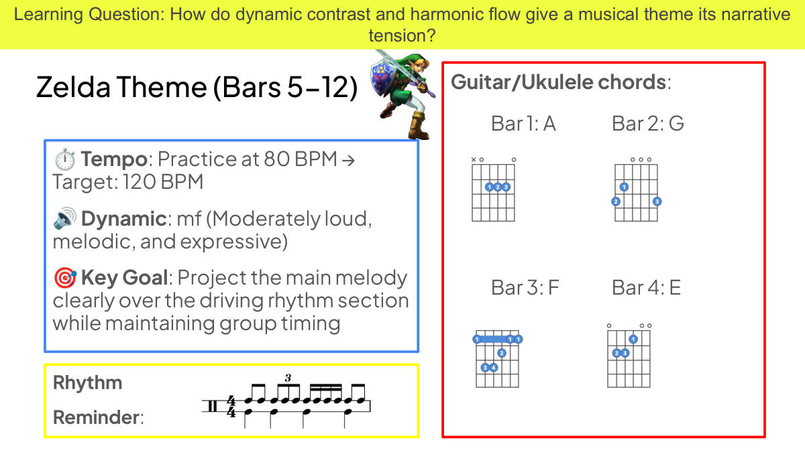
7쪽 · 젤다 테마 연주하기 (5~12마디)
⏱ 템포: 80 BPM으로 연습하고, 목표는 120 BPM이다.
🔊 셈여림: mf (조금 세게, 선율을 살려 표현력 있게)
🎯 핵심 목표: 힘차게 이끄는 리듬 파트 위로 주선율이 또렷하게 들리게 하면서 모둠 전체의 박자를 맞춘다.
기타/우쿨렐레 코드:
1마디: A
2마디: G
3마디: F
4마디: E
리듬 주의사항:
학습 질문: 셈여림의 대비와 화음의 흐름은 음악 주제에 어떻게 이야기 같은 긴장감을 주는가?
이 곡은 80 BPM으로 천천히 연습한 뒤 120 BPM까지 빠르기를 올리는 것이 목표다. mf는 '메조 포르테'로, 조금 세게 연주하라는 뜻이다.
기타·우쿨렐레 코드는 A → G → F → E 순서로 한 마디씩 바뀐다. 주선율이 리듬 파트에 묻히지 않게 또렷하게 연주하면서 모둠 전체가 박자를 맞추는 것이 핵심이다.
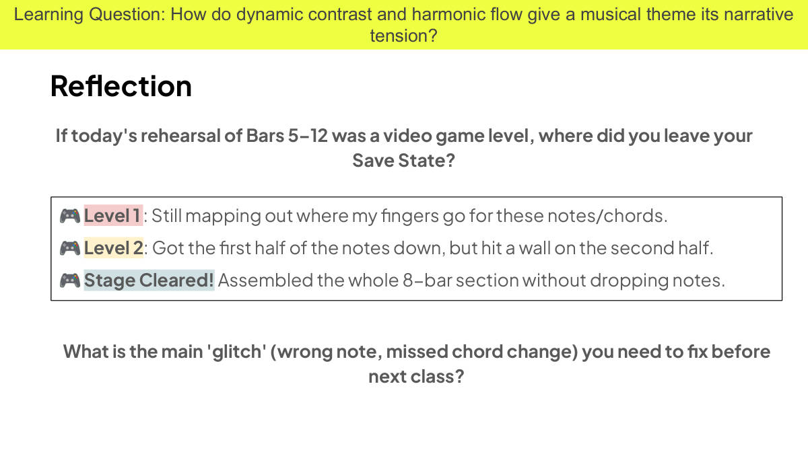
8쪽 · 되돌아보기: 오늘 연습은 어디까지 했나
오늘 한 5~12마디 리허설이 비디오 게임의 한 레벨이었다면, 너는 어디에 저장 지점을 남겼나?
학습 질문: 셈여림 대비와 화성의 흐름은 어떻게 음악 주제에 이야기 같은 긴장감을 주는가?
🎮 레벨 1: 이 음들과 화음에서 손가락을 어디에 둘지 아직 익히고 있다.
🎮 레벨 2: 앞쪽 절반의 음은 익혔지만, 뒤쪽 절반에서 막혔다.
🎮 스테이지 클리어! 8마디 부분 전체를 음 하나 빠뜨리지 않고 이어 냈다.
다음 수업 전에 고쳐야 할 가장 큰 '글리치'(틀린 음, 놓친 화음 바뀜)는 무엇인가?
이 쪽은 오늘 연습한 5~12마디(8마디)를 게임 레벨에 빗대어 스스로 어디까지 했는지 고르는 되돌아보기다. 레벨 1은 손가락 자리를 익히는 중, 레벨 2는 앞 절반만 익힌 상태, 스테이지 클리어는 8마디 전체를 빠짐없이 연주한 상태다.
마지막 질문은 다음 수업 전에 고칠 실수를 하나 정하라는 것이다. 여기서 '글리치'는 틀린 음이나 화음이 바뀌는 곳을 놓친 것을 뜻하며, 학습 질문처럼 셈여림 대비와 화성의 흐름이 음악에 긴장감을 준다는 점을 떠올리며 연습하면 된다.
팡파르(fanfare)의 힘
팡파르는 크고 당당하게 울리는 짧은 음악이다.
이 자료의 핵심 질문은 여러 명이 함께 연주하는 합주(ensemble)에서 음량 균형(balance)과 박(pulse)이 어떻게 팡파르의 힘(power)을 만드느냐는 것이다.
혼자 크게 연주한다고 팡파르가 강해지지 않는다. 모두가 같은 박에 맞추고, 각자 자기 역할에 맞는 크기로 연주해야 힘이 생긴다.
박(pulse)과 받쳐 주는 반주
팡파르 전체를 붙잡아 주는 것은 일정하게 이어지는 반주 박(backing pulse)이다.
낮은 음으로 받쳐 주는 베이스라인(bassline)이나 한 박에 한 음씩 치는 4분음표(crotchet) 리듬이 이 역할을 한다.
이 박이 흔들리지 않아야 위에서 연주하는 멜로디도 흔들리지 않는다.
박에 맞추기 어려우면 옆 친구를 기준(peer anchor)으로 삼거나 손짓 같은 시각 신호(visual cues)를 보고 맞춘다.
음량 균형(dynamic balance)
팡파르에는 귀에 가장 잘 들려야 하는 주된 선율, 곧 리드 모티프(lead fanfare motif)가 있다.
반주(accompaniment)가 너무 크면 이 모티프가 묻힌다.
그래서 반주는 한 발 물러서고 모티프는 그 위에 또렷하게 얹히도록 음량을 조절한다. 이것이 dynamic balance다.
셋잇단음표(triplet)와 점음표 리듬(dotted rhythm)
셋잇단음표(triplet)는 한 박을 똑같이 세 개로 나눈 리듬이다.
점음표 리듬(dotted rhythm)은 긴 음과 짧은 음이 짝을 이루어 통통 튀는 느낌을 준다.
둘 다 팡파르를 힘차게 만드는 리듬이지만, 연주하다 보면 쉽게 빨라지거나(rushing) 느려진다(dragging).
박에 딱 붙어서 흔들림 없이 연주하는 상태를 'in the pocket'이라고 한다.
꾸밈 변형(decorative variations)
기본 선율에 장식을 더하면 팡파르의 힘과 짜임새(texture)가 풍성해진다.
자료에 나온 꾸밈은 세 가지다. 선율 주위를 돌아 감듯 꾸미는 턴(turns), 같은 음을 한 옥타브 위나 아래에서 겹쳐 연주하는 옥타브 겹치기(octave doubling), 주된 리듬과 엇갈리는 다른 리듬을 넣는 대리듬(counter-rhythms)이다.
또 크고 작은 소리의 차이, 곧 셈여림 대비(dynamic contrast)를 살리면 팡파르가 더 극적으로 들린다.
몸풀기 리듬 사다리(Rhythm Ladder)
마디(bar)마다 리듬이 조금씩 잘게 나뉘는 연습이다.
1마디는 4분음표(crotchet) 네 개로 1, 2, 3, 4를 친다.
2마디는 셋잇단음표 묶음 네 개로, 8분음표 셋잇단(eighth-note triplets)이 모두 12개다.
3마디는 4분음표와 셋잇단음표를 번갈아(Crotchet, Triplet, Crotchet, Triplet) 친다.
4마디는 온음표(whole note)로 Concert A(라 음)를 길게 내며 마무리하고, 이때 모두의 음이 맞는지 조율(tuning)을 확인한다.
젤다 인트로(Zelda Intro) 1~4마디
연습 곡은 젤다 인트로의 첫 네 마디다.
빠르기(tempo)는 1분에 80박(80 BPM)으로 연습을 시작해 120 BPM까지 올리는 것이 목표다.
셈여림(dynamic)은 f(forte)로, 크고 대담하고 영웅적으로 연주한다.
가장 중요한 목표는 몰아치는 셋잇단음표 박(triplet pulse)을 합주 전체가 하나로 맞추는 것이다.
기타·우쿨렐레 코드는 1마디 A5, 2마디 G5, 3마디 F5, 4마디 E5 순서로, 한 음씩 내려가는 흐름이다.
A5처럼 이름 뒤에 5가 붙은 코드는 으뜸음과 5도 음만 쓰는 파워 코드(power chord)다.
되돌아보기 기준(Reflection)
내 연주가 팡파르의 힘에 얼마나 보탬이 됐는지 1~4로 판단한다.
1 Off-Beat: 리듬 파트를 따라가지 못했거나 내 역할에 비해 너무 크거나 작게 연주했다.
2 Holding On: 박은 대체로 지켰지만 까다로운 셋잇단·점음표 리듬에서 균형이 무너졌다.
3 In the Pocket: 리듬 파트와 딱 맞게 연주했고 팀 균형에 맞게 음량을 조절했다.
4 Producer Level: 박을 완벽히 지키고 짜임새의 균형을 맞추며, 꾸밈과 이끄는 연주로 그룹 전체를 끌어올렸다.
✍️ 꼭 알아야 하는 것
- 팡파르의 힘은 흔들리지 않는 박(pulse)과 음량 균형(balance)에서 나온다. 반주는 받쳐 주고 리드 모티프(lead motif)는 또렷하게 들려야 한다.
- 셋잇단음표(triplet)는 한 박을 셋으로 나눈 리듬이고, 빨라지지도(rushing) 느려지지도(dragging) 않고 박에 붙어 연주하는 것을 'in the pocket'이라고 한다.
- 꾸밈 변형(decorative variations)에는 턴(turns), 옥타브 겹치기(octave doubling), 대리듬(counter-rhythms)이 있고 팡파르의 힘과 짜임새(texture)를 풍성하게 한다.
📚 이 자료의 핵심 단어
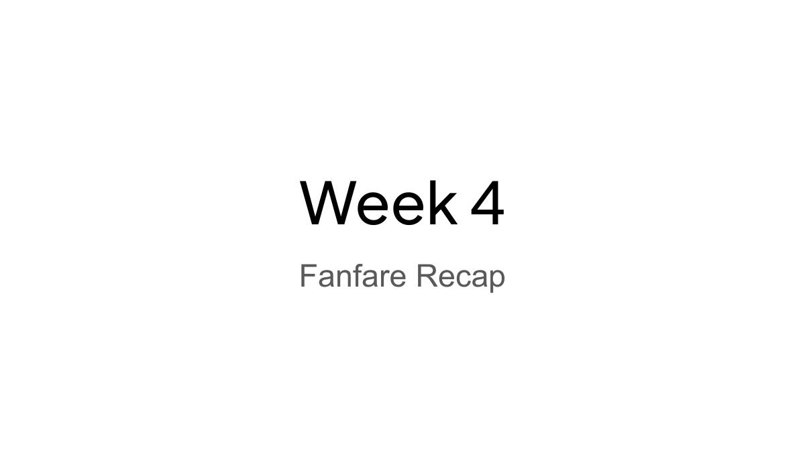
1쪽 · 4주차 Fanfare 복습
Fanfare 복습
이 쪽은 Lesson 4의 첫 쪽으로, 4주차에 배운 Fanfare 내용을 복습하는 부분의 제목이다. Recap은 '요약, 다시 정리하기'라는 뜻이다.
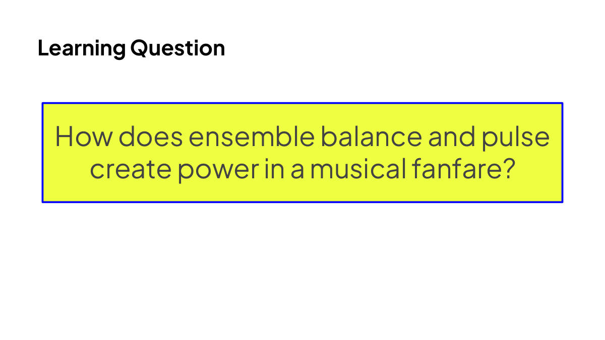
2쪽 · 학습 질문: 팡파르의 힘
음악 팡파르에서 앙상블 균형과 박(펄스)은 어떻게 힘을 만들어 내는가?
이 쪽은 이번 단원의 학습 질문이다. 팡파르에서 앙상블 균형과 박(펄스)이 어떻게 힘찬 느낌을 만드는지 생각해 보는 것이 이번 수업의 목표다.
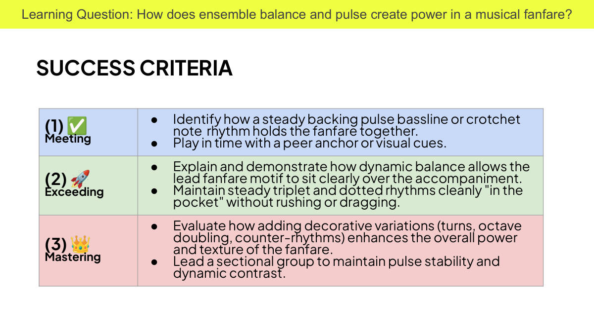
3쪽 · 성공 기준: 합주 균형과 박자
학습 질문: 합주의 균형과 박자(펄스)는 음악 팡파르에서 어떻게 힘을 만들어 내는가?
(1) ✅ 도달
꾸준히 받쳐 주는 펄스의 베이스라인이나 4분음표 리듬이 팡파르를 어떻게 하나로 묶어 주는지 찾아낸다.
짝꿍 기준 연주자나 눈으로 보는 신호에 맞춰 박자를 지키며 연주한다.
(2) 🚀 초과
셈여림 균형 덕분에 앞에 나서는 팡파르 동기(모티프)가 반주 위에서 또렷하게 들리는 까닭을 설명하고 직접 보여 준다.
셋잇단음표와 점음표 리듬을 서두르거나 처지지 않고 깔끔하게 "박자 안에" 지킨다.
(3) 👑 숙달
꾸밈 변주(턴, 옥타브 겹치기, 대선율 리듬)를 더하면 팡파르 전체의 힘과 짜임새가 어떻게 커지는지 평가한다.
파트 모둠을 이끌며 박자를 흔들림 없이 지키고 셈여림 대비를 살린다.
이 쪽은 세 단계(도달·초과·숙달)로 나눈 성공 기준이다. 도달은 꾸준한 박자 위에서 함께 연주하는 것, 초과는 셈여림 균형과 셋잇단·점음표 리듬을 정확히 지키는 것, 숙달은 꾸밈 변주를 평가하고 모둠을 이끄는 것이다.
팡파르의 힘은 반주의 꾸준한 박자(베이스라인·4분음표)와 셈여림 균형에서 나온다. 반주가 박자를 받치고 주선율이 반주보다 또렷하게 들려야 팡파르가 힘 있게 들린다.
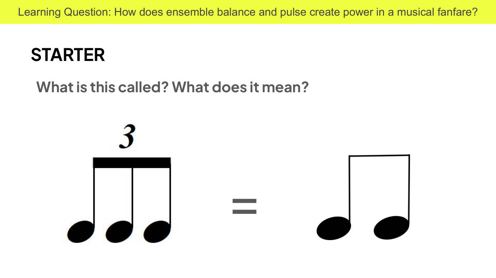
4쪽 · 시작 활동과 이번 시간 학습 질문
이것은 무엇이라고 부를까? 무슨 뜻일까?
학습 질문: 음악 팡파르(fanfare)에서 합주 균형(ensemble balance)과 박(pulse)은 어떻게 힘을 만들어 낼까?
시작 활동에서는 쪽에 나온 기호의 이름과 뜻을 맞혀 본다.
이번 시간에는 합주 균형(ensemble balance)과 박(pulse)이 팡파르를 힘 있게 만드는 방법을 배운다.
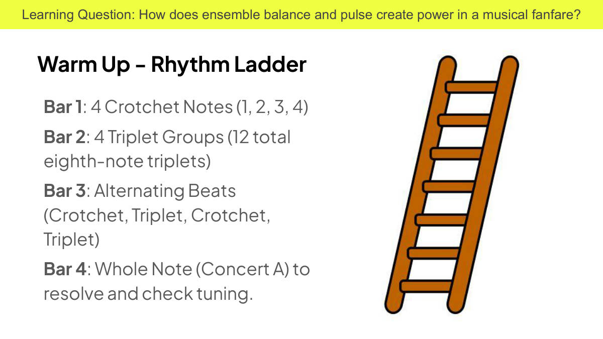
5쪽 · 준비 운동 - 리듬 사다리
1마디: 4분음표 4개 (1, 2, 3, 4)
2마디: 셋잇단음표 묶음 4개 (8분음표 셋잇단음표 모두 12개)
3마디: 박을 번갈아 친다 (4분음표, 셋잇단음표, 4분음표, 셋잇단음표)
4마디: 온음표(콘서트 A)로 마무리하고 음정을 맞춰 본다.
학습 질문: 합주의 균형과 박은 음악의 팡파르에서 어떻게 힘을 만들어 내는가?
리듬 사다리는 마디마다 리듬이 바뀌는 준비 운동이다. 1마디는 4분음표 4개, 2마디는 한 박에 8분음표 셋을 넣는 셋잇단음표 4묶음(모두 12개), 3마디는 4분음표와 셋잇단음표를 번갈아 친다.
4마디는 콘서트 A를 온음표로 길게 내며 마무리하고, 이때 음정이 맞는지 확인한다.
이 수업의 학습 질문은 합주에서 소리의 균형과 일정한 박이 팡파르에 어떻게 힘을 주는지이다.
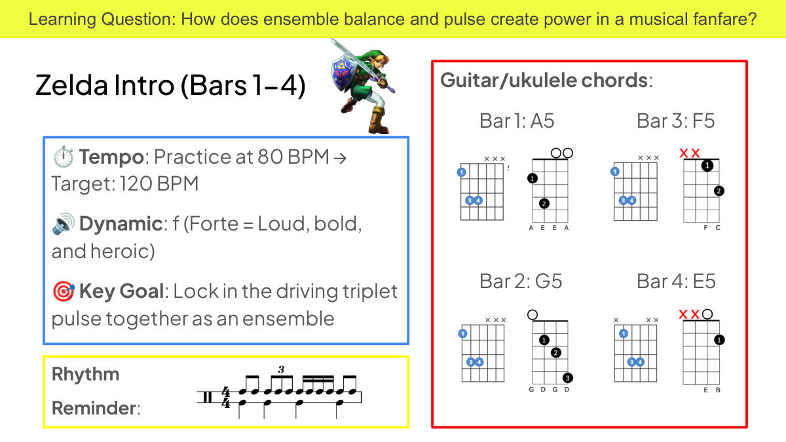
6쪽 · 젤다 인트로 1~4마디 합주 연습
⏱ 템포: 80 BPM으로 연습한다 → 목표: 120 BPM
🔊 셈여림: f (포르테 = 크게, 힘차게, 영웅답게)
🎯 핵심 목표: 몰아치는 셋잇단음표 박을 합주로 함께 딱 맞춘다
기타/우쿨렐레 코드:
1마디: A5
2마디: G5
3마디: F5
4마디: E5
리듬 기억하기:
탐구 질문: 합주의 균형과 박은 어떻게 팡파르에 힘을 만들어 낼까?
처음에는 80 BPM으로 천천히 연습하고, 익숙해지면 목표 빠르기인 120 BPM까지 올린다.
f(포르테)는 '세게'라는 뜻이며, 이 곡에서는 크고 힘차며 영웅다운 느낌으로 연주한다.
1~4마디 코드는 A5 → G5 → F5 → E5 순서로 한 마디씩 내려간다.
가장 중요한 목표는 모든 연주자가 셋잇단음표 박을 함께 정확히 맞추는 것이다. 합주의 균형과 박이 맞아야 팡파르가 힘 있게 들린다.
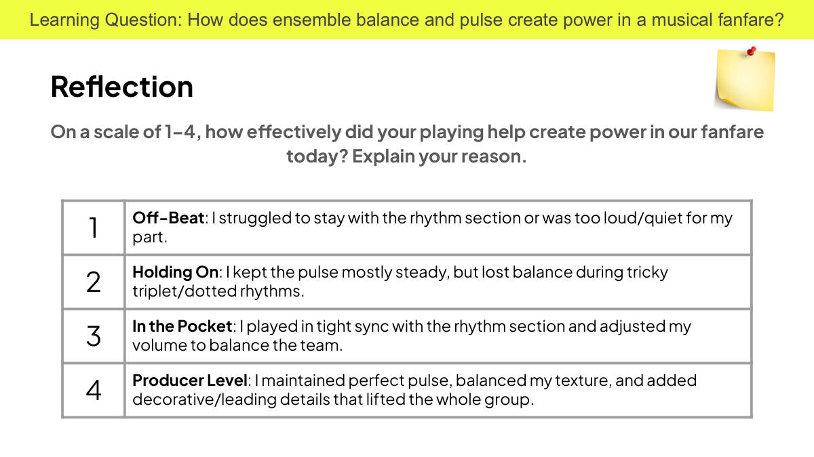
7쪽 · 되돌아보기: 팡파르에서 내 연주 평가하기
되돌아보기
1~4점 가운데, 오늘 나의 연주는 우리 팡파르에 힘을 불어넣는 데 얼마나 잘 도움이 되었을까? 그렇게 생각한 이유를 설명해 보자.
1점 Off-Beat(박자를 놓침): 리듬 파트를 따라가기 힘들었거나, 내 파트보다 소리가 너무 크거나 작았다.
2점 Holding On(겨우 버팀): 박을 대체로 고르게 지켰지만, 까다로운 셋잇단음표와 점음표 리듬에서 균형을 잃었다.
3점 In the Pocket(딱 맞물림): 리듬 파트와 딱 맞게 연주했고, 팀의 균형에 맞게 내 음량을 조절했다.
4점 Producer Level(프로듀서 수준): 박을 완벽하게 지켰고, 내 텍스처의 균형을 맞췄으며, 꾸밈이나 이끄는 부분을 더해 모둠 전체의 연주를 끌어올렸다.
이 쪽은 오늘 수업을 마치고 자신의 연주를 1~4점으로 스스로 평가하는 쪽이다. 점수만 고르지 말고 그 점수를 고른 이유를 꼭 적어야 한다.
점수가 높아지는 기준은 세 가지다. 리듬 파트와 박을 맞추는 것, 다른 연주자와 음량·텍스처의 균형을 맞추는 것, 그리고 꾸밈이나 이끄는 부분을 더해 모둠 전체를 살리는 것이다. 이 세 가지가 학습 질문에 나온 '균형'과 '박'이 팡파르에 힘을 만드는 방법이다.
이 자료는 Legend of Zelda scores 단원에 올라온 악보(score) 자료다. 게임 The Legend Of Zelda에 나오는 음악을 연주할 수 있게 정리해 둔 것이다. 음악 수업에서 직접 연주하거나 분석할 때 쓰는 자료다.
자료 종류는 book으로 표시돼 있다. 즉 낱장 프린트가 아니라 여러 곡이 묶인 악보집 형태다. 어느 곡을 연습할지 선생님이 지정해 주면 그 부분을 찾아 보면 된다.
올라온 시점은 Posted Yesterday, 곧 어제 올라온 새 자료다. more_vert(점 세 개)는 More options, 즉 다운로드 같은 추가 메뉴를 여는 버튼이다.
✍️ 꼭 알아야 하는 것
- 이 자료가 젤다의 전설 음악의 악보(score)이며 악보집(book) 형태라는 점
- 점 세 개 more_vert 버튼을 누르면 자료를 열거나 받을 수 있는 More options 메뉴가 나온다는 점
편곡(arrangement)
이 자료는 게임 Super Mario Bros의 음악을 여러 사람이 함께 연주할 수 있도록 바꿔 쓴 편곡(arrangement)이다.
편곡은 원래 곡의 멜로디를 살리면서 악기 구성이나 파트를 새로 나눠 다시 쓴 것을 말한다.
심화 과제(extension)
이 편곡은 경험이 있는 학생(experienced students)을 위한 심화 과제(extension)로 주어졌다.
기본 과제보다 난이도가 높은 곡이라는 뜻이다.
모둠 연주(independent group)
선생님이 한 명씩 이끄는 방식이 아니라, 학생들끼리 독립된 모둠(independent group)을 꾸려 스스로 연습하고 맞춰 보는 곡이다.
그래서 각자 맡은 파트(part)를 정확히 익히고, 다른 파트와 박자를 맞추는 것이 중요하다.
✍️ 꼭 알아야 하는 것
- arrangement(편곡)는 원래 곡을 악기·파트에 맞게 다시 쓴 것이다
- extension(심화 과제)는 기본보다 어려운 추가 과제를 뜻한다
기초 진단 평가Baseline Assessment1학기
이 자료는 2 Bentley Test - Tune이라는 이름의 과제(Assignment)다. 즉 수업 중에 읽고 끝나는 자료가 아니라, 학생이 직접 무언가를 만들거나 답을 제출해야 하는 제출 과제다. 제목에 Test가 들어 있으므로 평가가 따르는 활동으로 보는 것이 맞다.
제목의 Tune은 가락·선율을 뜻하는 말이다. 단원 번호가 2이므로, 2단원에서 다루는 Bentley 관련 내용 중 이 항목이 Tune(선율) 부분에 해당한다는 표시다.
제출 기한은 Due Aug 18, 즉 8월 18일이다. 이 날짜 안에 과제를 올려야 하며, 화면의 more_vert(점 세 개)·More options는 과제 제출이나 파일 첨부 같은 추가 메뉴를 여는 버튼이다.
✍️ 꼭 알아야 하는 것
- 이 항목은 읽기 자료가 아니라 제출해야 하는 과제(Assignment)라는 점
- 마감일이 8월 18일(Due Aug 18)이라는 점
이 자료는 Bentley Test라는 음악 능력 검사의 화음(chords) 파트에 해당하는 과제(assignment)다. 벤틀리 테스트는 여러 항목으로 나뉘어 있고, 그중 chords 항목은 두 개 이상의 음이 동시에 울리는 소리를 듣고 판단하는 부분이다. 제목이 '3 Bentley Test - Chords'이므로 단원 3의 화음 부분을 다룬다.
제출 기한은 8월 18일(Due Aug 18)로 표시돼 있다. 클래스룸에 올라온 과제 형태이므로 기한 안에 제출해야 하는 항목이다.
✍️ 꼭 알아야 하는 것
- 이 과제의 주제는 화음(chords)이며, 단원 3의 벤틀리 테스트 항목 중 하나라는 점
- 제출 기한이 8월 18일이라는 점
이 자료는 4단원 Bentley Test - Rhythm 과제다. Bentley Test는 음악 적성(음악을 듣고 구분하는 능력)을 확인하는 듣기 검사이며, 그중 이 과제가 다루는 부분은 리듬(rhythm)이다.
자료에 적힌 정보는 과제(Assignment)라는 것과 제출 기한이 8월 18일(Due Aug 18)이라는 것이다. 즉 내용을 길게 읽는 자료가 아니라, 기한 안에 제출해야 하는 과제 항목이다.
✍️ 꼭 알아야 하는 것
- 이 항목은 과제(Assignment)이며 제출 기한은 8월 18일이다.
- 다루는 주제는 4단원 Bentley Test의 리듬(rhythm) 부분이다.
이 자료는 음악 수업을 시작하면서 지금 내 수준이 어디인지 확인하는 기초 진단(Baseline Assessment) 안내다. 첫 시간에 구글 클래스룸(Google Classroom)에 코드로 가입한 뒤, 구글 폼으로 퀴즈를 푼다. 퀴즈는 총 5개로, 이론 퀴즈(Theory Quiz) 1개와 듣기 퀴즈(Listening Quiz) 4개다.
듣기 퀴즈 4개는 각각 다른 귀를 쓴다. 음높이(Pitch)는 소리가 높은지 낮은지, 가락(Tune)은 멜로디가 어떻게 흘러가는지, 화음(Chords)은 한 번에 소리가 2개·3개·4개 중 몇 개 겹쳐 나는지, 리듬(Rhythm)은 박자 패턴을 듣는 것이다. 이 4개 듣기 검사를 묶어 벤틀리 테스트(Bentley Test)라고 부른다. 자료 전체를 관통하는 질문은 '귀를 훈련하고 음악 이론을 알면 새 악기와 새 곡을 배우기가 왜 더 쉬워지는가'다.
수업 목표는 세 단계로 나뉜다. 기본(Meeting) 단계는 음악 이론(music theory, 적혀 있는 규칙)과 귀 훈련(ear training, 듣기)의 차이를 말할 수 있고, 어려워도 끝까지 풀어보며, 사람마다 출발점이 다르다는 것을 이해하는 것이다. 그 위(Exceeding)는 어떤 문제가 쉽고 어떤 문제가 완전히 처음인지 스스로 알아채는 것, 가장 높은 단계(Mastering)는 듣기 시험에서 들린 패턴을 이미 아는 노래와 연결하고 올해 음악 목표를 하나 정하는 것이다. 즉 이 퀴즈는 점수로 등수를 매기는 시험이 아니라 오늘 내 위치를 보여주는 것이다.
1학기 평가 방식도 함께 나온다. 최종 평가(Summative Assessment)는 합주 녹음(Full Class Ensemble Recording)과 수업 중 개인 파트를 짚어 확인하는 부분 점검(Targeted Part-Testing)이며, 유창함·테크닉·표현(AO2)을 본다. 성적은 5단계 스튜디오 등급으로 매긴다. A는 The Master Track(모든 음과 리듬이 완벽하고 박이 흔들리지 않음), B는 The Radio Edit(작은 실수 한두 개지만 바로 회복), C는 The Solid Demo(대부분 맞지만 가끔 빨라지거나 느려짐), D는 The Rough Cut(자주 멈추고 친구에게 의지), E는 The Scratch Take(일부 조각만 연주, 박을 못 맞춤)다.
숙제는 '스튜디오 테이프(Studio Tapes)'라는 2주에 한 번 내는 연습 녹화다. 집이나 학교 연습실에서 영상으로 찍어 구글 클래스룸에 낸다. 단계는 1단계 Work Tape(음 찾기), 2단계 Scratch Track(박자 맞추기), 3단계 Final Demo(표현까지 살려 무대에 설 수준)로 올라간다. 피드백은 선생님 → 친구 → 스스로 3가지가 돌아가며 이루어진다. 매 수업 첫 5분은 악보를 읽는 '이론 체육관(Theory Gym)'(AO1)이고, 수업 중에는 친구 연주에 전문가처럼 의견을 주는 '프로듀서 패널(Producer's Panel)'을 한다.
✍️ 꼭 알아야 하는 것
- 듣기 검사 4가지가 각각 무엇을 듣는지 구분할 것 — Pitch(음높이), Tune(가락), Chords(겹친 소리 개수), Rhythm(박자).
- 이론(theory)은 '적혀 있는 규칙'이고 귀 훈련(ear training)은 '듣는 것'이라는 차이를 말할 수 있어야 한다.
- 숙제 3단계(Work Tape → Scratch Track → Final Demo)와 성적 5단계(E The Scratch Take → A The Master Track)의 순서를 알아둘 것.
📚 이 자료의 핵심 단어
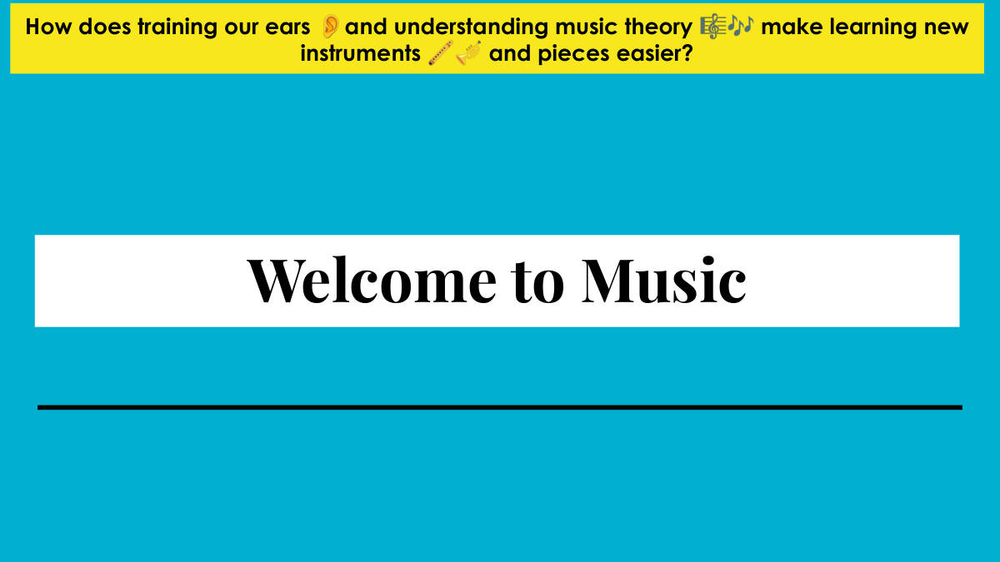
귀를 훈련하는 것👂과 음악 이론🎼🎶을 이해하는 것이 새로운 악기🎺와 곡을 배우는 일을 어떻게 더 쉽게 만들어 주는가?
이 수업 전체를 이끄는 질문은 '귀 훈련과 음악 이론이 새 악기·새 곡 배우기를 어떻게 쉽게 만드는가'이다
음악을 배우는 두 축으로 귀 훈련과 음악 이론이 제시된다
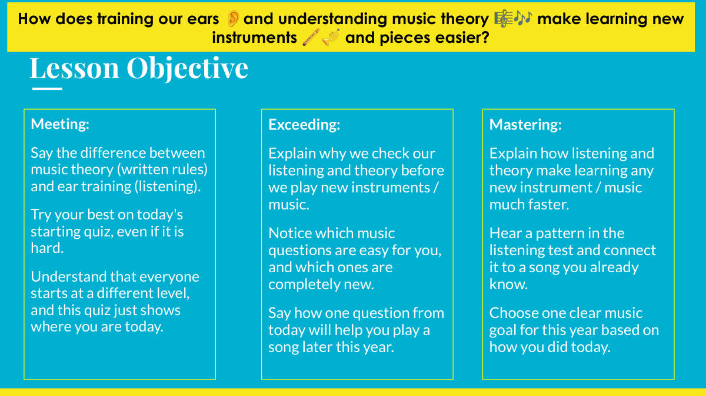
도달(Meeting):
음악 이론(글로 쓰인 규칙)과 귀 훈련(듣기)의 차이를 말한다.
오늘의 시작 퀴즈가 어렵더라도 최선을 다한다.
모두가 서로 다른 수준에서 시작한다는 것을 이해하고, 이 퀴즈는 오늘 내가 어디쯤 있는지를 보여줄 뿐임을 안다.
초과 달성(Exceeding):
새 악기나 음악을 연주하기 전에 왜 듣기와 이론을 점검하는지 설명한다.
어떤 음악 문제가 나에게 쉬운지, 어떤 것이 완전히 새로운지 알아차린다.
오늘의 문제 하나가 올해 어떤 곡을 연주하는 데 어떻게 도움이 될지 말한다.
숙달(Mastering):
듣기와 이론이 새 악기나 음악을 배우는 속도를 얼마나 빠르게 하는지 설명한다.
듣기 시험에서 패턴을 듣고, 이미 아는 노래와 연결한다.
오늘 한 결과를 바탕으로 올해의 음악 목표를 하나 분명히 정한다.
👂 귀를 훈련하고 🎼🎶 음악 이론을 이해하는 것이 새 악기 🎺와 곡을 배우기 쉽게 만드는 이유는 무엇인가?
음악 이론은 글로 쓰인 규칙이고, 귀 훈련은 듣기다 — 이 둘의 차이가 이 수업의 핵심이다.
목표는 도달·초과 달성·숙달 세 단계로 나뉘며, 오늘 퀴즈는 점수를 매기는 것이 아니라 지금 내 수준을 확인하는 것이다.
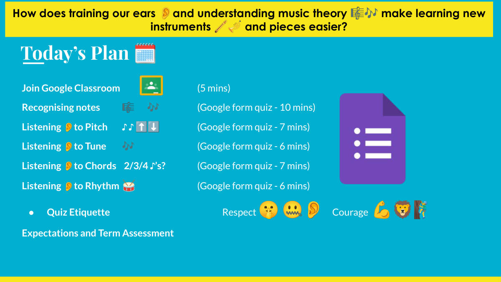
구글 클래스룸 가입하기 (5분)
음표 알아보기 🎼🎶 (구글 폼 퀴즈 - 10분)
음높이 👂 듣기 ♪ ♪ ⬆⬇ (구글 폼 퀴즈 - 7분)
가락(선율) 👂 듣기 🎶 (구글 폼 퀴즈 - 6분)
화음 👂 듣기 — 음이 2개/3개/4개? (구글 폼 퀴즈 - 7분)
리듬 👂 듣기 🥁 (구글 폼 퀴즈 - 6분)
퀴즈 예절 — 존중 🤫🤐👂, 용기 💪🦁
기대하는 태도와 학기 평가
귀를 훈련하고 음악 이론을 이해하는 것이 새 악기 🎺와 새 곡을 배우는 데 어떻게 도움이 될까?
오늘 수업은 구글 폼 퀴즈 5개로 진행된다 — 음표 읽기(10분), 음높이(7분), 가락(6분), 화음(7분), 리듬(6분) 순이다.
퀴즈를 볼 때 지켜야 할 태도는 조용히 듣는 존중과, 틀려도 도전하는 용기다.
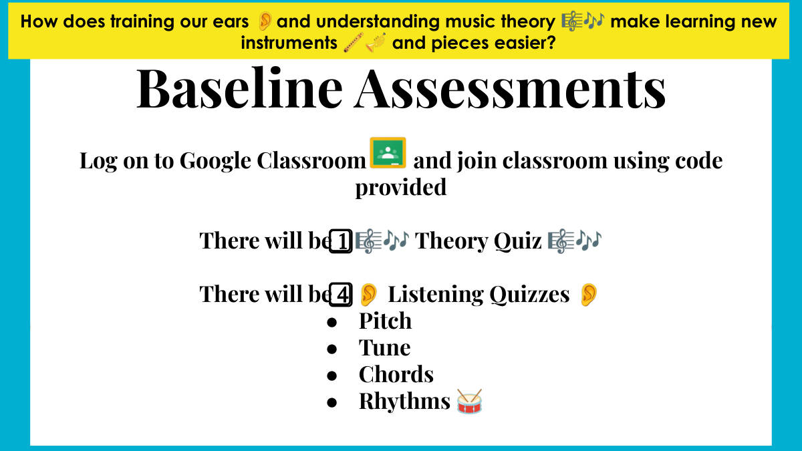
구글 클래스룸에 로그인하고, 제공된 코드로 클래스룸에 참여한다.
음악 이론 퀴즈가 1개 있다.
듣기 퀴즈가 4개 있다.
● 음높이(Pitch)
● 가락(Tune)
● 화음(Chords)
● 리듬(Rhythms)
귀를 훈련하고 음악 이론을 이해하는 것이 새로운 악기와 곡을 배우는 데 어떻게 더 쉽게 만들어 주는가?
평가는 이론 퀴즈 1개와 듣기 퀴즈 4개, 모두 5개로 이루어진다.
듣기 퀴즈 4개의 주제는 음높이·가락·화음·리듬이다.
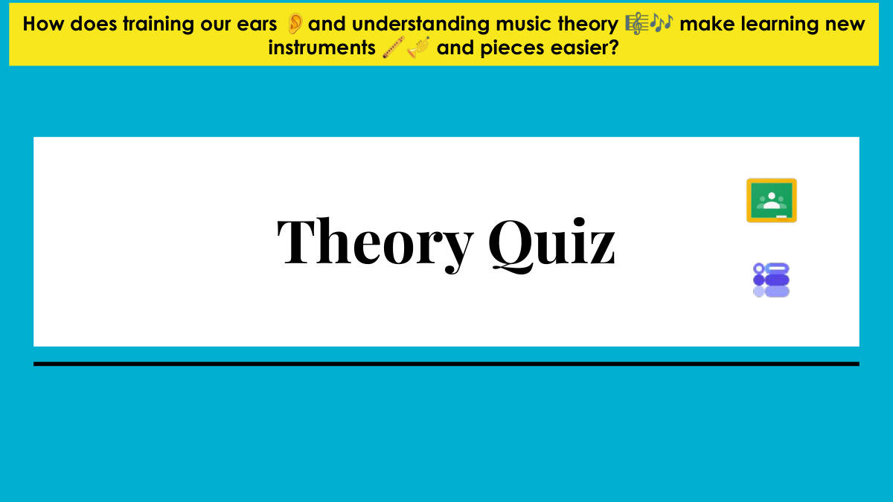
귀를 훈련하는 것👂과 음악 이론🎼🎶을 이해하는 것은 새로운 악기🎺와 곡을 배우는 일을 어떻게 더 쉽게 만드는가?
이 쪽은 이론 퀴즈의 여는 질문 한 개다
묻는 것은 청음 훈련과 음악 이론이 새 악기·새 곡 배우기를 쉽게 해 주는 방식이다
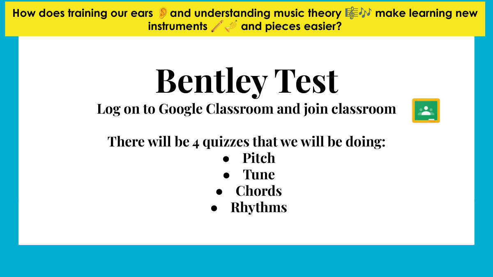
구글 클래스룸에 로그인해서 클래스룸에 들어온다.
우리가 할 퀴즈는 4개다.
● Pitch(음높이)
● Tune(가락)
● Chords(화음)
● Rhythms(리듬)
귀를 훈련하고 음악 이론을 이해하는 것이 새 악기와 새 곡을 배우는 데 어떻게 더 쉽게 만들어 주는가?
구글 클래스룸에 로그인해 클래스룸에 참여해야 테스트를 볼 수 있다
벤틀리 테스트는 음높이·가락·화음·리듬 네 가지 퀴즈로 이루어진다
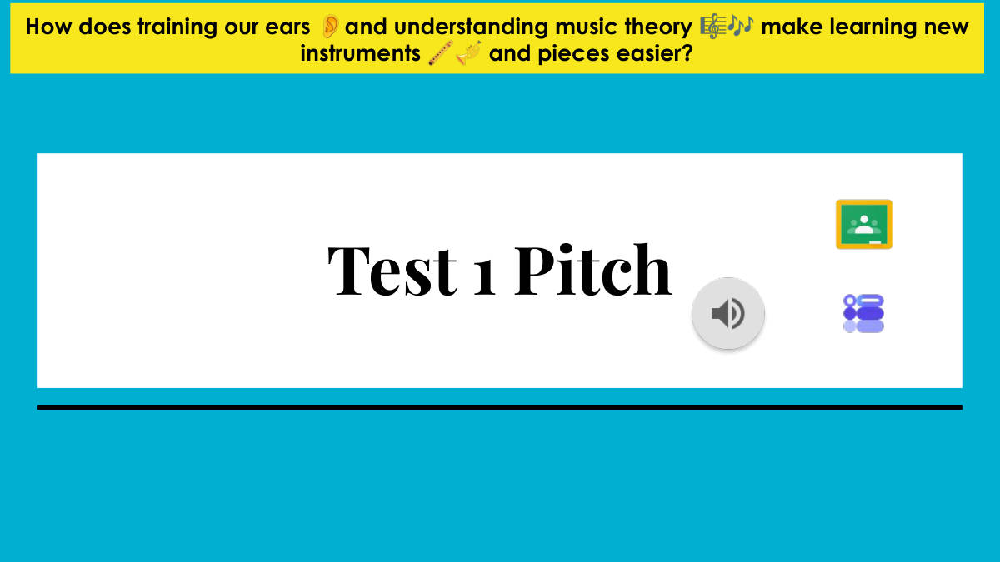
귀를 훈련하는 것 👂과 음악 이론 🎼🎶을 이해하는 것은 새로운 악기 🎺와 곡을 배우는 일을 어떻게 더 쉽게 만들까?
첫 번째 테스트 주제는 음높이(Pitch)다.
귀 훈련과 음악 이론이 새 악기·새 곡을 배우는 데 어떤 도움이 되는지 생각해 보는 질문이다.
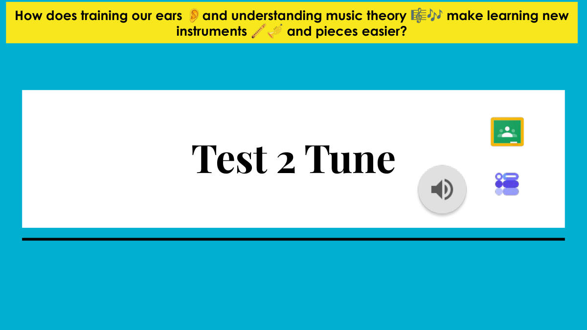
귀를 훈련하는 것 👂과 음악 이론 🎼🎶을 이해하는 것이 어떻게 새 악기 🎺와 새 곡을 배우기 쉽게 만드는가?
두 번째 테스트는 'Tune(음 맞추기)'이며, 귀 훈련과 음악 이론을 다룬다.
귀 훈련과 음악 이론이 새 악기·새 곡 익히는 것을 왜 쉽게 해 주는지를 묻는 쪽이다.
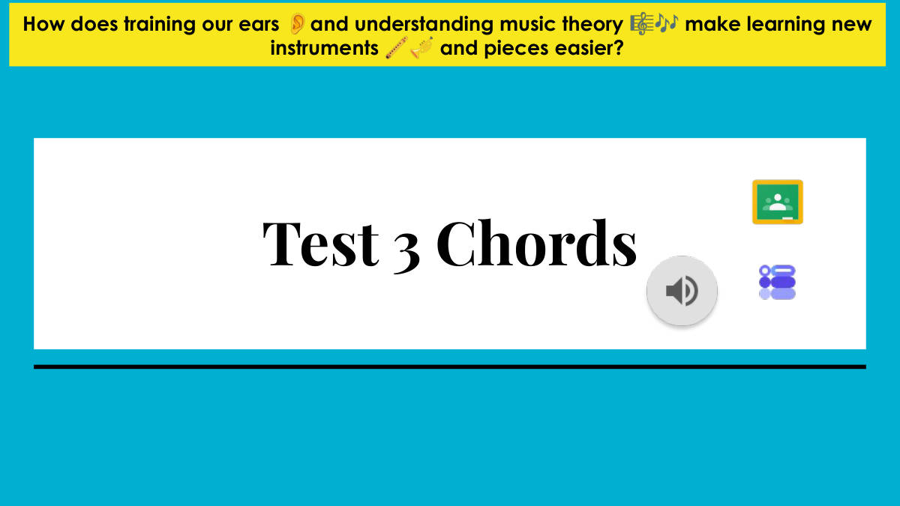
귀를 훈련하고 음악 이론을 이해하는 것이, 새로운 악기와 곡을 배우는 일을 어떻게 더 쉽게 만드는가?
세 번째 테스트의 주제는 화음(Chords)이다.
귀 훈련과 음악 이론이 새 악기·새 곡 학습을 쉽게 만드는 이유를 생각해 보는 질문이다.
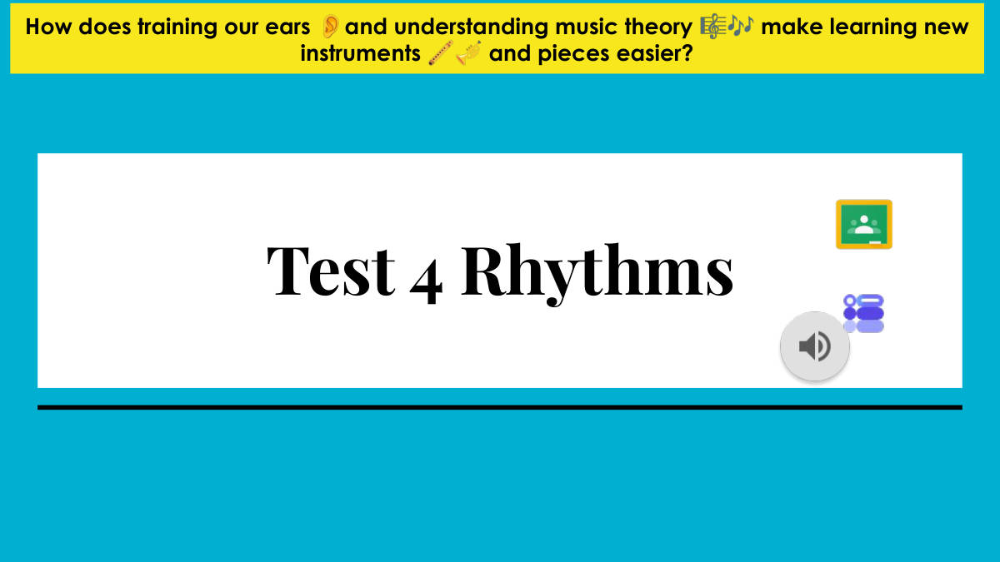
귀를 훈련하는 것과 음악 이론을 이해하는 것은 새로운 악기와 곡을 배우는 일을 어떻게 더 쉽게 만드는가?
네 번째 테스트 주제는 리듬이다.
이 쪽은 귀 훈련과 음악 이론이 새 악기·새 곡 학습을 쉽게 해 주는 이유를 생각해 보게 하는 질문이다.
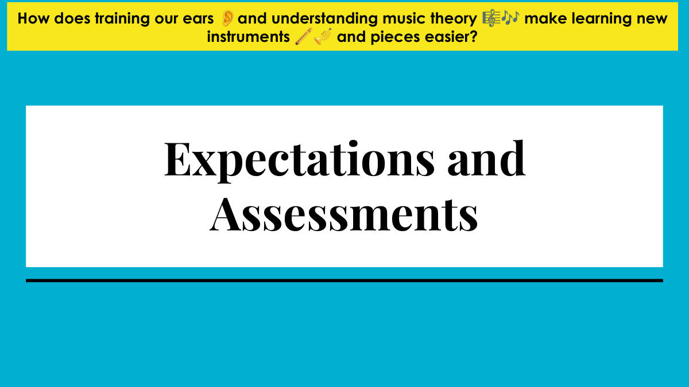
귀를 훈련하고 음악 이론을 이해하는 것이, 새로운 악기와 곡을 배우는 일을 어떻게 더 쉽게 만들어 줄까?
이 수업의 기대치와 평가 방식을 다루는 쪽이다.
청음 훈련과 음악 이론 이해가 새 악기·새 곡을 배우는 데 어떤 도움이 되는지 생각해 보게 하는 질문이 나온다.
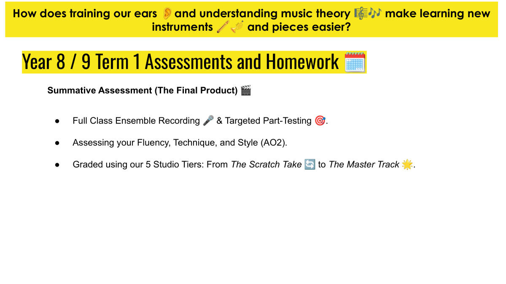
총괄평가(최종 결과물)다.
반 전체 합주 녹음과 지정 파트 개별 테스트를 한다.
유창성, 테크닉, 스타일을 평가한다(AO2).
5단계 스튜디오 등급으로 매긴다. 가장 낮은 The Scratch Take부터 가장 높은 The Master Track까지다.
귀를 훈련하고 음악 이론을 이해하면 새 악기와 새 곡을 배우기가 왜 더 쉬워질까?
평가는 합주 녹음과 개별 파트 테스트 두 가지로 이뤄지고, 보는 항목은 유창성·테크닉·스타일(AO2)이다.
점수는 5단계 스튜디오 등급으로 나오며 The Scratch Take가 아래, The Master Track이 위다.
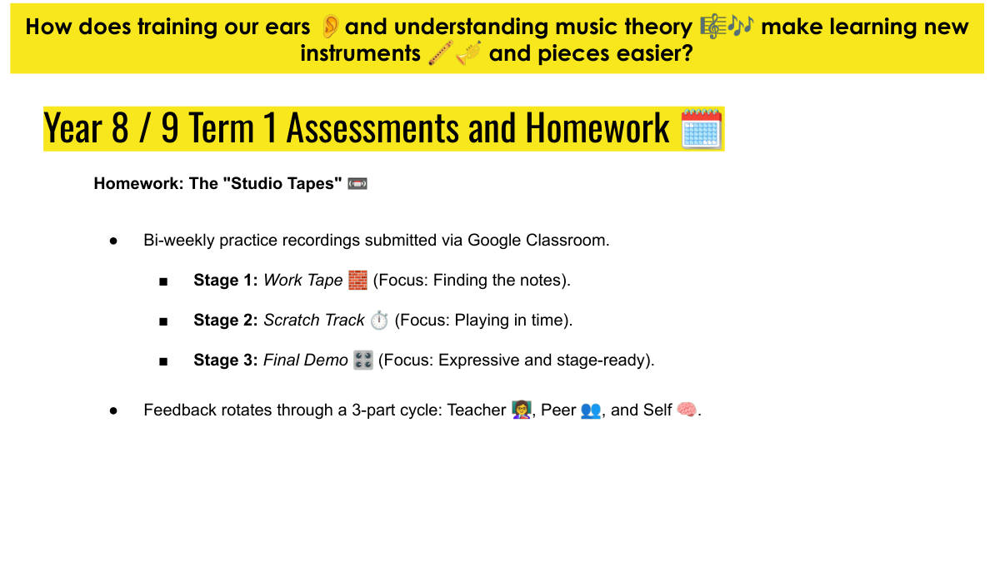
격주로 연습 녹음을 구글 클래스룸으로 제출한다.
1단계: 워크 테이프 🧱 (초점: 음 찾기).
2단계: 스크래치 트랙 ⏱ (초점: 박자에 맞춰 연주하기).
3단계: 파이널 데모 🎛 (초점: 표현력 있고 무대에 설 준비가 된 상태).
피드백은 3단계 순환으로 돈다: 선생님, 친구 👥, 자기 자신 🧠.
귀를 훈련하고 👂 음악 이론을 이해하는 것 🎼🎶이 새로운 악기 🎺와 곡을 배우는 일을 어떻게 더 쉽게 만드는가?
8·9학년 1학기 평가와 숙제 🗓
숙제 녹음은 격주로 구글 클래스룸에 내며, 워크 테이프(음 찾기) → 스크래치 트랙(박자) → 파이널 데모(표현·무대 준비) 3단계로 올라간다.
피드백은 선생님·친구·자기 자신 세 가지가 돌아가며 이루어진다.
처음 5분: "이론 체육관" 🧠 (악보를 능동적으로 읽기 - AO1).
"프로듀서 패널" 📋 (실시간 수업 "스포트라이트" 시간에 친구에게 전문가처럼 피드백 주기).
귀를 훈련하고 👂 음악 이론을 🎼🎶 이해하는 것이 새로운 악기 🎺와 곡을 배우는 데 어떻게 더 쉽게 만들어 줄까?
8학년 / 9학년 1학기 평가와 과제 🗓
수업마다 반복되는 두 가지 루틴이 있다 — 처음 5분 '이론 체육관'에서 악보를 능동적으로 읽고(AO1), '프로듀서 패널'에서 실시간 수업 중 친구 연주에 전문가다운 피드백을 준다.
이 쪽의 핵심 질문은 '귀 훈련과 음악 이론 이해가 새 악기와 새 곡 배우기를 어떻게 더 쉽게 만드는가'다.
집이나 학교 연습실에서 혼자 연습한 것을 영상으로 녹화해 낸다.
피드백은 선생님, 친구, 자기 평가 세 가지가 번갈아 돌아간다.
조금씩 나아지는 것에 초점을 둔다 — 음 찾기, 박자 지키기, 흐름 만들기.
질문: 청음 훈련과 음악 이론 이해가 새 악기와 새 곡을 배우는 것을 어떻게 더 쉽게 만드는가?
8·9학년 1학기 평가와 숙제
숙제는 2주마다 내는 개인 연습 영상이고, 피드백은 선생님·친구·자기 평가 3가지가 돌아가며 진행된다
평가 기준은 잘 치는 것보다 음 찾기·박자 지키기·흐름 만들기의 점진적 발전이다
가장 중요한 목표는 함께 연주하는 앙상블 공연이다.
수업의 스포트라이트(Spotlight) 단계에서 파트별 집중 테스트로 평가한다.
우리의 5단계 A~E 매트릭스(Starting Out부터 Concert Ready까지)로 점수를 매긴다.
귀를 훈련하고 음악 이론을 이해하는 것이 새 악기와 새 곡을 배우는 걸 어떻게 더 쉽게 만드는가?
Year 8 / 9 1학기 평가와 과제
평가는 혼자 연주가 아니라 다 같이 하는 앙상블 공연이 중심이고, 수업 중 스포트라이트 단계에서 자기 파트를 따로 테스트받는다.
성적은 A~E 5단계로, 맨 아래 'Starting Out'에서 맨 위 'Concert Ready'까지 나뉜다.
⚙첫 5분: "이론 체육관" 🧠 (악보를 능동적으로 읽기 - AO1)
"프로듀서 패널" 📋 (수업 중 "스포트라이트" 시간에 전문가처럼 동료 피드백을 주는 것)
귀를 훈련하고 👂 음악 이론 🎼🎶을 이해하는 것이 새 악기 🎺와 새 곡을 배우는 것을 어떻게 더 쉽게 만드는가?
8학년 / 9학년 1학기 평가와 숙제 🗓
수업마다 첫 5분은 '이론 체육관'으로 악보 읽기를 연습하고, 수업 중 '스포트라이트' 순서에서는 '프로듀서 패널'이 되어 친구 연주에 피드백을 준다.
악보 읽기 활동은 평가 항목 AO1에 해당하며, 이 쪽의 핵심 질문은 '귀 훈련과 음악 이론이 새 악기와 새 곡 배우기를 왜 쉽게 만드는가'이다.
귀를 훈련하고 음악 이론을 이해하는 것이 새로운 악기와 곡을 배우는 일을 어떻게 더 쉽게 만드는가?
중점: 기술적 조절, 리듬 협응, 양식적 표현.
스튜디오 등급 / 서술 / 연주 점검표
A등급: 마스터 트랙 — 매우 우수
음과 리듬: 모든 음과 리듬을 완벽하게 연주한다. 멈추거나 느려지지 않는다.
박: 복잡하거나 당김음이 있는 부분에서도 흔들림 없는 내면의 박을 유지한다.
양식: 맑고 울림 있는 전문적인 음색을 낸다. 셈여림과 아티큘레이션을 그 양식에 맞게 완벽히 쓴다.
B등급: 라디오 에디트 — 대체로 우수
음과 리듬: 아주 작은 실수 한두 개만 있다. 합주를 멈추지 않고 곧바로 회복한다.
박: 박을 꾸준히 유지한다. 반주 음원이나 지휘자와 박자를 맞춘다.
양식: 안정되고 조절된 음색을 낸다. 지정된 셈여림 변화와 아티큘레이션을 정확히 적용한다.
C등급: 솔리드 데모 — 보통
음과 리듬: 대부분의 음과 리듬을 바르게 연주한다. 실수가 좀 있지만 음악을 이어간다.
박: 대체로 믿을 만한 박을 유지하나, 가끔 빨라지거나 느려질 수 있다.
양식: 받아들일 만한 음색을 낸다. 양식적 뉘앙스는 제한적이고 기본 음만 연주한다.
D등급: 러프 컷 — 일부
음과 리듬: 음과 리듬을 어려워한다. 길을 잃어 자주 멈추고 다시 시작한다.
박: 꾸준한 박을 지키기 어려워한다. 제자리를 찾으려고 친구들에게 크게 의존한다.
양식: 약하거나 바람 새는 음색을 낸다. 셈여림이나 아티큘레이션의 변화가 거의 없다.
E등급: 스크래치 테이크 — 시도함
음과 리듬: 곡의 작은 조각만 연주한다. 악보 구조를 따라가지 못한다.
박: 박을 지키거나 반과 박자를 맞추지 못한다.
양식: 음색 만들기나 양식적 표현을 전혀 조절하지 못한다.
연주 평가는 세 가지로 나뉜다 — 음과 리듬(정확도), 박(박자 유지), 양식(음색과 표현). 등급은 A(마스터 트랙)부터 E(스크래치 테이크)까지다.
A와 B를 가르는 것은 실수의 크기가 아니라 회복이다. B는 작은 실수 한두 개가 있어도 멈추지 않고 바로 회복하며, C부터는 박이 흔들리거나 표현이 빠진다.
충족:
음악 이론(글로 적힌 규칙)과 청음 훈련(듣기)의 차이를 말한다.
오늘의 시작 퀴즈가 어렵더라도 최선을 다한다.
누구나 시작하는 수준이 다르며, 이 퀴즈는 오늘의 내 위치만 보여 준다는 것을 이해한다.
우수:
새 악기나 음악을 연주하기 전에 왜 우리의 듣기와 이론을 점검하는지 설명한다.
어떤 음악 문제가 나에게 쉽고, 어떤 문제가 완전히 처음인지 알아차린다.
오늘의 문제 하나가 올해 안에 곡을 연주하는 데 어떻게 도움이 될지 말한다.
최우수:
듣기와 이론이 어떤 새 악기나 음악이든 훨씬 빠르게 배우게 해 주는 방식을 설명한다.
듣기 시험에서 패턴을 듣고, 이미 아는 곡과 연결한다.
오늘의 결과를 바탕으로 올해의 분명한 음악 목표 하나를 정한다.
귀를 훈련하고 음악 이론을 이해하는 것이 새 악기와 새 곡을 배우기 쉽게 만드는 이유는 무엇일까?
목표가 충족·우수·최우수 세 단계로 나뉘며, 위로 갈수록 '차이를 말한다 → 이유를 설명한다 → 아는 곡·올해 목표와 연결한다'로 요구가 깊어진다
이 쪽의 핵심 대비는 음악 이론(글로 적힌 규칙)과 청음 훈련(듣기)이고, 시작 퀴즈는 점수가 아니라 오늘의 내 위치를 확인하는 도구다
이 자료는 Google Forms로 만들어진 과제(Assignment)다. 종이 시험지가 아니라 인터넷 폼에 답을 적어서 제출하는 방식이다. 제목에 Sign-in이 붙어 있는데, 폼을 열려면 먼저 학교 계정으로 로그인해야 한다는 뜻이다.
단원은 5 Theory Quiz, 즉 5단원의 이론(theory) 확인 퀴즈다. 실기나 만들기가 아니라 배운 내용을 아는지 묻는 문제라는 것이다.
제출 기한은 Due Aug 18, 8월 18일까지다. 오른쪽의 점 세 개 표시(more_vert)는 More options, 즉 추가 메뉴를 여는 버튼이다.
✍️ 꼭 알아야 하는 것
- 제출 기한이 8월 18일(Aug 18)이라는 점
- 학교 계정으로 로그인(Sign-in)해야 폼이 열린다는 점
이 항목은 1 Bentley Test - Pitch 단원의 과제(assignment)이며, 8월 18일에 올라왔고 마감(Due)도 8월 18일로 되어 있다. 상태가 Missing으로 표시되어 있는데, 이는 아직 제출하지 않았다는 뜻이다.
자료 본체는 공부할 내용이 담긴 문서가 아니라 구글 폼(Google Forms) 주소다. 링크를 열면 로그인(Sign-in) 화면이 먼저 나오므로, 학교 계정으로 로그인해야 폼 내용이 열린다. 폼을 끝까지 작성해 제출하는 것이 이 과제를 하는 방법이다.
과제 화면에 View instructions(설명 보기)가 있으므로, 폼을 열기 전에 선생님이 적어둔 안내를 먼저 읽는 것이 좋다. 무엇을 써야 하는지가 거기에 적혀 있다.
✍️ 꼭 알아야 하는 것
- 상태가 Missing이므로 아직 제출되지 않았다 — 링크를 열어 폼을 제출해야 한다.
- 폼은 학교 계정 로그인(Sign-in)이 필요하다. 다른 계정으로는 열리지 않을 수 있다.
리듬 익히기Rhythm1학기
이 자료는 Chef Chop이라는 AI 리듬 튜터(AI rhythm tutor)를 학생에게 처음 소개하는 글이다. 단원 이름이 'Meet Chef Chop'인 것에서 알 수 있듯, 앞으로 리듬을 배울 때 도와줄 대상을 만나 보는 시작 자료다. 요리사(chef)와 자르다(chop)를 붙인 이름이라 리듬을 잘게 나누는 것과 연결된 별명으로 보인다.
제목에 붙은 THE RHYTHM PREP COOK은 '리듬 준비 요리사'라는 뜻이다. 요리에서 재료를 미리 손질해 두는 사람을 prep cook이라 부르는데, 그 비유를 리듬 공부에 가져다 쓴 이름이다.
자료 형태는 Material(수업 자료)이며 게시 시각은 오전 11시 16분으로 표시되어 있다. 이 자료에서 확인되는 글자는 제목과 안내 문구뿐이라, 실제 학습 내용은 자료를 직접 열어 확인해야 한다.
✍️ 꼭 알아야 하는 것
- Chef Chop이 리듬을 배우도록 도와주는 AI 튜터라는 점
- rhythm(리듬), prep cook(재료를 미리 손질하는 요리사)이라는 낱말의 뜻
연주곡 익히기Repertoire1학기
이 자료는 음악 이론을 아홉 갈래로 쪼개 놓은 연습 모음이다. 순서는 리듬(Rhythm), 피아노 건반 음이름(Piano notes), 높은음자리표(Treble Clef), 낮은음자리표(Bass Clef), 조표(Key Signatures), 음계(Scales), 음정(Intervals), 3화음(Triads), 7화음(Sevenths)다. 각 갈래마다 레벨이 있고, 같은 내용을 Practice(연습)와 Timed(시간 재기) 두 방식으로 하게 되어 있다.
레벨이 올라가는 방식이 갈래마다 정해져 있다. 자리표(Treble·Bass) 연습은 레벨 1이 칸(spaces), 2가 줄(lines), 3이 줄과 칸 둘 다, 4는 여기에 임시표(accidentals)가 붙고, 5·6은 덧줄(ledger line)을 한 줄, 두 줄씩 더한다. 피아노 건반은 1 흰건반 → 2 검은건반 샾(#) → 3 검은건반 플랫(b) → 4 전체 순이다. 조표는 1이 장조(Major), 2가 단조(minor), 3이 둘 다이며 모두 임시표 4개까지다.
음정(Intervals)은 두 가지를 같이 본다. 하나는 음정의 수(Interval Quantity), 즉 2도·3도 같은 거리이고, 다른 하나는 음정의 질(Interval Quality)이다. 위 음이 아래 음에서 시작하는 장음계에 들어 있으면 그 음정은 완전(Perfect)이거나 장(Major)인데, 1도·4도·5도·8도는 완전, 2도·3도·6도·7도는 장이다. 장음정을 반음(semitone) 낮추면 단(minor), 완전음정을 반음 낮추면 감(Diminished), 완전이나 장을 반음 올리면 증(Augmented)이 된다.
화음은 숫자 공식으로 정리되어 있다. 3화음(Triads)은 1, 3, 5(장) / 1, b3, 5(단) / 1, b3, b5(감) / 1, 3, #5(증) 네 가지다. 레벨 1은 장·단, 2는 단·감, 3은 장·증, 4는 모든 3화음이고, 5부터는 낮은음자리표까지 함께 나오며 6은 조표가 샾·플랫 2개까지 붙는다. 7화음(Sevenths)은 장7화음(Major 7th) → 딸림7화음(Dominant 7th) → 단7화음(Minor 7th) → 반감7화음(Half diminished 7th) → 감7화음(Diminished 7th) 순으로 하나씩 늘려 간다.
음계(Scales)는 네 종류를 다룬다. 장음계(Major), 자연단음계(Natural minor), 화성단음계(Harmonic minor), 가락단음계(Melodic minor)다. 묻는 방식도 두 가지여서, 레벨 1은 임시표(Accidentals)로 묻고 레벨 2는 조표(Key signature)로 묻는다. 딸린 자료로 장음계 표, 자연단음계 표, 7화음 자료(PDF)가 함께 있다.
✍️ 꼭 알아야 하는 것
- 음정의 질 규칙: 완전(1·4·5·8도)과 장(2·3·6·7도)을 구분하고, 장을 반음 내리면 단, 완전을 반음 내리면 감, 완전·장을 반음 올리면 증이 된다는 것을 외워야 한다.
- 3화음 네 개의 숫자 공식(1,3,5 / 1,b3,5 / 1,b3,b5 / 1,3,#5)과 그것이 각각 장·단·감·증 화음이라는 대응을 알아야 한다.
- 자리표 읽기는 칸 → 줄 → 줄과 칸 → 임시표 → 덧줄 순으로 어려워지므로, 높은음자리표와 낮은음자리표 둘 다 덧줄까지 읽을 수 있어야 한다.
📚 이 자료의 핵심 단어
Rhythm — 리듬 🥁
Piano notes — 피아노 음 🎹
Treble Clef — 높은음자리표 🎼
Bass Clef — 낮은음자리표 𝄢
Key Signatures — 조표
Scales — 음계 🎶🪜⬆️
Intervals — 음정
Chords - Triads — 화음(3화음)
Chords - Sevenths — 화음(7화음)
이 쪽은 앞으로 다룰 아홉 가지 주제를 늘어놓은 목차다.
리듬에서 시작해 음자리표·조표·음계·음정을 거쳐 화음(3화음 → 7화음)으로 이어지는 순서다.
Level 📶 (수준)
Content (내용)
Link (링크)
https://www.therhythmtrainer.com/
https://www.musicca.com/exercises/rhythms
리듬을 연습할 수 있는 사이트 두 곳(therhythmtrainer.com, musicca.com)이 링크로 걸려 있다.
표는 수준(Level)·내용(Content)·링크(Link) 칸으로 나뉘어 있다.
레벨 📶 / 내용 / ⏳ / ⏱️
1 흰건반 음 — 연습 / 시간재기
2 검은건반 - #(샵) — 연습 / 시간재기
3 검은건반 - b(플랫) — 연습 / 시간재기
4 모든 음 — 연습 / 시간재기
레벨은 흰건반 → 검은건반 샵(#) → 검은건반 플랫(b) → 모든 음 순서로 올라간다.
각 레벨마다 연습(Practice)과 시간재기(Timed) 두 가지 방식이 있다.
레벨 📶 / 내용 / ⏳ / ⏱️
높은음자리표 1단계: 칸 — 연습, 시간재기
높은음자리표 2단계: 줄 — 연습, 시간재기
높은음자리표 3단계: 줄과 칸 — 연습, 시간재기
높은음자리표 4단계: 임시표가 붙은 줄과 칸 — 연습, 시간재기
높은음자리표 5단계: 덧줄 1개 포함 — 연습, 시간재기
높은음자리표 6단계: 덧줄 2개 포함 — 연습, 시간재기
높은음자리표 음이름 연습이 6단계로 나뉘어 있고, 칸 → 줄 → 줄과 칸 → 임시표 → 덧줄 1개 → 덧줄 2개 순서로 어려워진다.
각 단계마다 연습(Practice)과 시간재기(Timed) 두 가지 방식이 있다.
레벨 📶 / 내용 / ⏳ / ⏱️
낮은음자리표 1단계 — 칸(Spaces) — 연습 — 시간 재기
낮은음자리표 2단계 — 줄(Lines) — 연습 — 시간 재기
낮은음자리표 3단계 — 줄과 칸 — 연습 — 시간 재기
낮은음자리표 4단계 — 줄과 칸, 임시표(accidentals) 포함 — 연습 — 시간 재기
낮은음자리표 5단계 — 덧줄(ledger line) 1개 포함 — 연습 — 시간 재기
낮은음자리표 6단계 — 덧줄 2개 포함 — 연습 — 시간 재기
낮은음자리표도 높은음자리표와 같은 순서로 1단계 칸 → 2단계 줄 → 3단계 줄과 칸으로 올라간다.
4단계부터는 임시표가 붙고, 5·6단계는 덧줄이 1개·2개로 늘어난다. 각 단계마다 연습(Practice)과 시간 재기(Timed) 두 가지로 할 수 있다.
단계 · 내용 · 연습(⏳) · 시간 재기(⏱️)
조표 1단계: 임시표 4개까지의 장조 조표 — 연습, 시간 재기
조표 2단계: 임시표 4개까지의 단조 조표 — 연습, 시간 재기
조표 3단계: 임시표 4개까지의 장조와 단조 조표 — 연습, 시간 재기
조표 연습은 3단계로 나뉘며, 1단계는 장조, 2단계는 단조, 3단계는 장조와 단조를 함께 다룬다.
세 단계 모두 임시표 4개까지 범위이고, 각 단계마다 연습 모드와 시간 재기 모드가 있다.
Major Scales and chart.pdf (장음계와 표)
Natural Minor Scales and chart.pdf (자연 단음계와 표)
표는 단계(Level), 내용(Content), 연습(⏳), 시간재기(⏱️)로 되어 있다.
음계 1단계 — 보표: 높은음자리표, 음계: 장음계와 자연 단음계, 문제 방식: 임시표(Accidentals). 연습 / 시간재기.
음계 2단계 — 보표: 높은음자리표, 음계: 장음계와 자연 단음계, 문제 방식: 조표(Key signature). 연습 / 시간재기.
음계 3단계 — 보표: 높은음자리표, 음계: 화성 단음계와 자연 단음계, 문제 방식: 임시표. 연습 / 시간재기.
음계 4단계 — 보표: 높은음자리표, 음계: 가락 단음계와 자연 단음계, 문제 방식: 임시표. 연습 / 시간재기.
음계 5단계 — 보표: 높은음자리표, 음계: 장음계, 화성 단음계, 가락 단음계, 자연 단음계, 문제 방식: 임시표. 연습 / 시간재기.
음계 6단계 — 보표: 높은음자리표와 낮은음자리표, 음계: 장음계, 화성 단음계, 가락 단음계, 자연 단음계, 문제 방식: 임시표. 연습 / 시간재기.
단계가 올라갈수록 다루는 음계 종류가 늘어난다. 1·2단계는 장음계와 자연 단음계만, 3단계에서 화성 단음계, 4단계에서 가락 단음계가 들어오고, 5단계에서 네 가지를 모두 섞는다.
보표와 문제 방식도 단계별로 달라진다. 5단계까지는 높은음자리표만 쓰고 6단계에서 낮은음자리표가 추가되며, 문제 방식은 2단계만 조표이고 나머지는 임시표다.
각 단계마다 연습(Practice)과 시간재기(Timed) 두 가지 방식으로 할 수 있다.
음정의 크기(Interval Quantity)
음정의 성질(Interval Quality)
완전음정과 장음정
위쪽 음이 아래쪽 음에서 시작하는 장음계에 속할 때, 그 음정의 성질은 크기에 따라 장음정(major) 또는 완전음정(perfect)이라고 한다.
● 완전(Perfect) – 1도(동음), 4도, 5도, 옥타브
● 장(Major) – 2도, 3도, 6도, 7도
단음정(Minor intervals)
장음정을 반음 하나만큼 내리면 그 성질은 단음정(minor)이 된다.
그 밖의 성질
감음정(Diminished)은 완전음정을 반음 내렸을 때 생긴다.
증음정(Augmented)은 완전음정이나 장음정을 반음 올렸을 때 생긴다.
단계 / 내용 / 연습 / 시간제한
음정 1단계 — 보표: 높은음자리표와 낮은음자리표 / 크기: 전부(2도~8도) / 성질: 없음 / 연습 · 시간제한
음정 2단계 — 보표: 높은음자리표 / 크기: 2도~4도 / 성질: 장·단·감 / 연습 · 시간제한
음정 3단계 — 보표: 높은음자리표와 낮은음자리표 / 크기: 2도~4도 / 성질: 장·단·감 / 연습 · 시간제한
음정 4단계 — 보표: 높은음자리표 / 크기: 5도~8도 / 성질: 장·단·감 / 연습 · 시간제한
음정 5단계 — 보표: 높은음자리표와 낮은음자리표 / 크기: 5도~8도 / 성질: 장·단·감 / 연습 · 시간제한
음정 6단계 — 보표: 높은음자리표와 낮은음자리표 / 크기: 2도~8도 / 성질: 장·단·감·증 / 연습 · 시간제한
완전음정은 1도·4도·5도·옥타브, 장음정은 2도·3도·6도·7도로 정해져 있다.
장음정을 반음 내리면 단음정, 완전음정을 반음 내리면 감음정, 완전음정이나 장음정을 반음 올리면 증음정이 된다.
음정 연습은 6단계로 나뉘며, 단계가 올라갈수록 자리표(높은음·낮은음)와 크기 범위, 다루는 성질이 늘어난다.
1, 3, 5
1, b3, 5
1, b3, b5
1, 3, #5
단계 📶 / 내용 / ⏳ / ⏱️
화음 - 3화음 레벨 1
보표: 높은음자리표
화음: 장3화음과 단3화음
조표: 샵·플랫 0개
임시표: 레벨 2
연습 / 시간 재기
화음 - 3화음 레벨 2
보표: 높은음자리표
화음: 단3화음과 감3화음
조표: 샵·플랫 0개
임시표: 레벨 2
연습 / 시간 재기
화음 - 3화음 레벨 3
보표: 높은음자리표
화음: 장3화음과 증3화음
조표: 샵·플랫 0개
임시표: 레벨 2
연습 / 시간 재기
화음 - 3화음 레벨 4
보표: 높은음자리표
화음: 모든 3화음
조표: 샵·플랫 0개
임시표: 레벨 2
연습 / 시간 재기
화음 - 3화음 레벨 5
보표: 높은음자리표와 낮은음자리표
화음: 모든 3화음
조표: 샵·플랫 0개
임시표: 레벨 2
연습 / 시간 재기
화음 - 3화음 레벨 6
보표: 높은음자리표와 낮은음자리표
화음: 모든 3화음
조표: 샵·플랫 2개까지
임시표: 레벨 2
연습 / 시간 재기
3화음은 1·3·5 자리 음을 쌓아 만들며, 3음과 5음에 b(플랫)나 #(샵)이 붙는 방식에 따라 1,3,5 / 1,b3,5 / 1,b3,b5 / 1,3,#5 네 가지로 나뉜다.
레벨 1에서 6으로 갈수록 조건이 늘어난다 — 화음 종류가 두 개씩에서 모든 3화음으로, 보표가 높은음자리표에서 높은음·낮은음자리표로, 조표가 0개에서 샵·플랫 2개까지로 넓어진다. 임시표는 모든 레벨에서 레벨 2로 같다.
파일 이름은 Seventh Chords.pdf다.
각 단계마다 Level(단계), Content(내용), 연습(Practice)과 시간재기(Timed)가 나뉜다.
Level 1: 보표는 높은음자리표, 화음은 장7화음 / 딸림7화음, 조표는 0개(#·b 없음), 임시표는 Level 2다.
Level 2: 높은음자리표, 화음은 장7화음 / 딸림7화음 / 단7화음, 조표 0개, 임시표 Level 2다.
Level 3: 높은음자리표, 화음에 반감7화음이 더해진다. 조표 0개, 임시표 Level 2다.
Level 4: 높은음자리표, 화음에 감7화음까지 더해진다. 조표 0개, 임시표 Level 2다.
Level 5: 보표가 높은음자리표와 낮은음자리표 둘 다로 늘어난다. 화음은 다섯 가지 모두, 조표 0개, 임시표 Level 2다.
Level 6: 높은음자리표와 낮은음자리표, 화음 다섯 가지 모두, 조표는 #·b 2개까지, 임시표 Level 2다.
단계가 오를수록 화음 종류가 하나씩 늘어난다 — 장7·딸림7 → 단7 → 반감7 → 감7 순이다.
Level 5부터 낮은음자리표가 추가되고, Level 6에서는 조표가 #·b 2개까지 나온다.
큰보표(Grand Staff)
피아노 악보는 오선 두 줄을 위아래로 묶어서 쓴다. 이것을 큰보표(Grand Staff)라고 한다.
위쪽 오선은 높은음자리 보표(Treble Staff)다. 높은 소리를 적고, 보통 오른손(right hand)으로 친다.
아래쪽 오선은 낮은음자리 보표(Bass Staff)다. 낮은 소리를 적고, 보통 왼손(left hand)으로 친다.
높은음자리표 = G음자리표(Treble clef = G clef)
높은음자리표는 소용돌이 모양으로 아래에서 둘째 줄을 감싸며 그린다. 그 줄이 G줄(G line)이고, 그 줄에 걸친 음표가 G(솔)다. 이 음을 Treble G라고 부른다.
G를 알면 한 칸씩 위로 A, B, C, D, E, F, G로 올라가고, 아래로는 F, E, D로 내려가며 다른 음을 찾을 수 있다.
낮은음자리표 = F음자리표(Bass clef = F clef)
낮은음자리표는 아래에서 넷째 줄에서 시작하고, 두 점이 그 줄을 위아래로 끼고 있다. 그 줄이 F줄(F line)이고, 그 줄에 걸친 음표가 F(파)다. 이 음을 Bass F라고 부른다.
F에서 한 칸씩 위로 올라가면 G, A, B, C로, 아래로 내려가면 E, D, C, B, A, G로 이어진다.
줄(line)과 칸(space)
오선에서 음표는 줄 위에 걸치거나 줄과 줄 사이 칸에 들어간다. 줄 하나 다음은 칸, 칸 다음은 줄 순서로 알파벳이 하나씩 올라간다.
높은음자리 보표의 칸 네 개는 아래에서부터 F, A, C, E로, 영어 낱말 FACE와 같다. 높은음자리 보표의 줄 다섯 개는 아래에서부터 E, G, B, D, F다.
낮은음자리 보표의 줄 다섯 개는 아래에서부터 G, B, D, F, A이고, 칸 네 개는 A, C, E, G다.
가온다(Middle C)
두 보표 사이 한가운데에 짧은 덧줄(ledger line)을 그어 적는 음이 가온다(Middle C)다. 피아노 건반의 가운데쯤에 있는 '도'다.
Middle C는 높은음자리 보표 아래에 적어도, 낮은음자리 보표 위에 적어도 같은 음(Same note)이다. 그래서 두 보표는 Middle C를 사이에 두고 이어지는 하나의 긴 음 사다리처럼 읽는다.
✍️ 꼭 알아야 하는 것
- Treble Staff는 보통 오른손, Bass Staff는 보통 왼손으로 치고, 두 보표를 묶은 것이 Grand Staff다.
- 높은음자리표(G clef)는 둘째 줄 G를, 낮은음자리표(F clef)는 넷째 줄 F를 표시한다.
- Middle C는 두 보표 사이 덧줄에 적는 음이고, 위 보표에 적든 아래 보표에 적든 같은 음이다.
📚 이 자료의 핵심 단어
1쪽 · 큰보표(그랜드 스태프) 안내
높은음자리표 보표 — 보통 오른손으로 친다.
낮은음자리표 보표 — 보통 왼손으로 친다.
가운데 도(Middle C)
높은음 G(G line) · 낮은음 F(F line)
같은 음(Same note)
© 2023 Hoffman Academy. 악보, 레슨, 인터랙티브 게임은 HoffmanAcademy.com에서 찾을 수 있다.
큰보표는 위쪽 높은음자리표 보표와 아래쪽 낮은음자리표 보표를 묶은 것이다. 높은음자리표 보표는 보통 오른손, 낮은음자리표 보표는 보통 왼손으로 친다.
높은음자리표는 G줄(솔)을, 낮은음자리표는 F줄(파)을 기준으로 삼는다. 가운데 도(Middle C)는 두 보표 사이에 있고, 위 보표에서 쓰든 아래 보표에서 쓰든 같은 음이다.
음 이름은 C D E F G A B(도 레 미 파 솔 라 시)가 차례로 되풀이된다.
그 밖의 자료안내 · 예약 · 도구공통
이 자료는 SJIIS 음악과(Music Department)에서 올린 연습실 예약(Practice Room Booking) 링크다. 단원 이름도 'Practice Room Booking Link'로, 수업 내용이 아니라 예약을 하러 들어가는 통로다. 그래서 읽고 외우는 자료가 아니라, 필요할 때 눌러서 쓰는 자료다.
자료 유형이 Material(자료)로 되어 있고, 게시일은 8월 26일(Posted Aug 26)이다. 과제(assignment)가 아니므로 제출할 것도, 마감일도 붙어 있지 않다.
화면 오른쪽의 more_vert(점 세 개)를 누르면 More options(더 보기)가 나온다. 링크를 새 창으로 열거나 복사하는 등의 기능이 여기에 들어 있다.
✍️ 꼭 알아야 하는 것
- 이 자료는 제출용 과제가 아니라 연습실을 예약하러 가는 링크 자료(Material)라는 점이다.
- 연습실을 쓰려면 이 링크로 들어가 미리 예약(booking)을 해야 한다는 점이다.
FOBISIA
FOBISIA는 Federation of British International Schools in Asia의 줄임말이다.
아시아에 있는 영국식 국제학교들이 함께 묶여 있는 연합체다.
이 연합에 속한 학교들끼리 운동 대회, 음악 행사, 학술 대회 같은 학교 간 행사를 서로 열고 참가한다.
서정이가 다니는 학교 같은 국제학교가 다른 나라 국제학교 학생들과 만나는 자리가 바로 이 FOBISIA 행사다.
Battle of the Bands
Battle of the Bands(BOtB)는 여러 밴드가 한 무대에서 차례로 연주하고 겨루는 형식의 음악 대회다.
혼자 하는 독주가 아니라 밴드(band) 단위로 참가하는 것이 핵심이다.
보통 보컬(vocals), 기타(guitar), 베이스(bass), 드럼(drums), 키보드(keyboard) 같은 역할을 나눠 맡은 팀이 한 조가 되어 무대에 오른다.
여러 학교의 밴드가 모여 연주 실력과 무대 구성을 보여주는 competition이다.
BSG
제목의 BSG는 이 대회를 여는(주최하는) 학교를 가리키는 학교 이름 약자다.
FOBISIA 행사는 매년 회원 학교 중 한 곳이 host school(주최 학교)이 되어 다른 학교들을 초청하는 방식으로 열린다.
따라서 2027년 Battle of the Bands는 BSG가 주최 학교라는 뜻이 된다.
2027
대회가 열리는 해는 2027년이다.
이런 전단(flyer)에는 보통 대회 날짜, 장소, 참가 신청 방법, 참가 자격(학년), 연주 시간 제한 같은 참가 조건이 적힌다.
참가를 생각한다면 신청 마감일(deadline)과 자기 학년이 참가 가능한 범위에 들어가는지를 먼저 확인해야 한다.
✍️ 꼭 알아야 하는 것
- FOBISIA = Federation of British International Schools in Asia, 아시아 영국식 국제학교 연합이라는 뜻을 영어로 풀어 말할 수 있어야 한다.
- Battle of the Bands는 개인 연주가 아니라 밴드(band) 단위로 참가해 겨루는 음악 대회라는 점을 알아야 한다.
- 이 대회는 2027년에 열리고 BSG가 주최 학교(host school)라는 점을 알아야 한다.
여는 학교(host) — 광저우 브리티시 스쿨(The British School of Guangzhou, BSG)
때 — 2027년 1월 21일~24일
곳 — 983-3 Tonghe Road, Baiyun District, Guangzhou (중국 광저우)
참가 신청(REGISTRATION)은 전단 아래쪽 QR 코드로 한다.
밴드(band) 단위로 참가해 겨루는 음악 대회다.
대회 이름 — FOBISIA는 아시아 지역 영국계 국제학교 연합(Federation of British International Schools in Asia)이다.
이 대회는 그 학교들이 함께 여는 온라인(online) 대회다.
기타 독주(guitar solo)는 다른 악기 없이 기타 한 대로 혼자 연주하는 것을 뜻한다.
심사 기준 — 심사 기준(criteria)은 심사위원이 연주를 평가할 때 보는 항목이다.
연주를 준비할 때는 이 자료에 적힌 각 항목을 하나씩 맞춰 보는 것이 좋다.
✍️ 꼭 알아야 하는 것
- criteria는 '심사 기준'이라는 뜻이다.
- guitar solo는 기타 한 대로 혼자 연주하는 것이다.
대회 이름
이 대회의 이름은 Online Guitar Solo Competition(온라인 기타 독주 대회)이다.
Solo(솔로)는 혼자서 연주한다는 뜻이다.
대회는 Charter International School이 주최(Hosted by)한다.
참가 대상
참가할 수 있는 학년은 Primary(초등), Key Stage 3, Key Stage 4, Key Stage 5이다.
Key Stage(키 스테이지)는 영국식 학제에서 학년을 묶어 부르는 단계 이름이다.
초등부터 고등 과정까지 모두 참가할 수 있다는 뜻이다.
장르
연주 곡의 장르(genre)는 자유이다.
자료에는 "Submissions can be of any genre"라고 적혀 있다. 클래식이든 팝이든 어떤 장르로 내도 된다는 뜻이다.
Submission(제출물)은 대회에 내는 연주를 말한다.
일정
대회 기간은 2026년 9월 1일부터 12월 11일까지이다.
Launch(시작): 2026년 9월 1일이다.
Register by(등록 마감): 2026년 9월 30일이다. 이 날까지 먼저 참가 신청을 해야 한다.
Submission Deadline(제출 마감): 11월 13일이다. 이 날까지 연주를 내야 한다.
Winner Announcement(수상자 발표): 12월 11일이다.
문의처
대회 담당자(Event Contact)는 Robyn Wynn이다.
이메일 주소는 FOBISIA@charter.ac.th이다.
✍️ 꼭 알아야 하는 것
- 등록 마감(Register by)은 2026년 9월 30일, 제출 마감(Submission Deadline)은 11월 13일이다. 등록과 제출은 마감일이 서로 다르다.
- 장르(any genre)는 자유이고, Primary부터 Key Stage 5까지 참가할 수 있다.
- 수상자 발표(Winner Announcement)는 12월 11일이고, 주최 학교는 Charter International School이다.
📚 이 자료의 핵심 단어
1쪽 · FOBISIA 온라인 기타 독주 대회 안내
초등(Primary), Key Stage 3, Key Stage 4, Key Stage 5 학생이 참가할 수 있다.
제출하는 곡은 어떤 장르든 된다.
대회 시작: 2026년 9월 1일
등록 마감: 2026년 9월 30일
작품 제출 마감: 11월 13일
수상자 발표: 12월 11일
Charter International School이 주최한다.
행사 담당자: Robyn Wynn - FOBISIA@charter.ac.th
대회 기간은 2026년 9월 1일부터 12월 11일까지다.
이 대회는 온라인으로 기타 독주를 제출하는 대회이고, 장르 제한이 없다.
일정 순서는 시작(9월 1일), 등록 마감(9월 30일), 제출 마감(11월 13일), 수상자 발표(12월 11일)다. 등록을 먼저 해야 하므로 9월 30일을 놓치지 않아야 한다.